처음 실행하면 튜토리얼을 실행할지 묻는 창이 뜨고, 그 뒤로 시작 화면이 보입니다. 문서는 뒤에서 1280×720 투명 캔버스로 준비되어 있습니다. 파일 → 새로 만들기에서 다른 크기나 배경을 고를 수 있습니다.
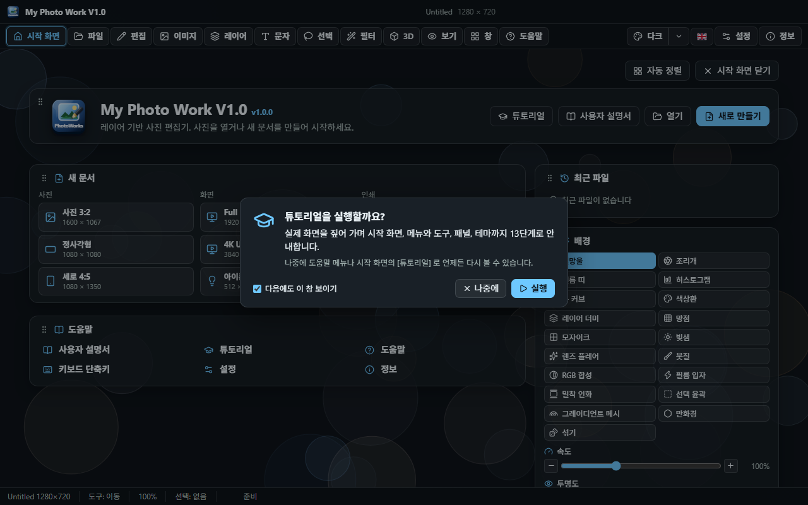
튜토리얼을 실행할지 묻는 창
바탕화면에서 이미지나 .mpw 프로젝트를 창 위로 끌어다 놓아도 됩니다. 손대지 않은 문서 위에 놓으면 그 파일을 열고, 이미 편집한 문서 위에 놓으면 새 레이어로 들어옵니다.
시작 화면
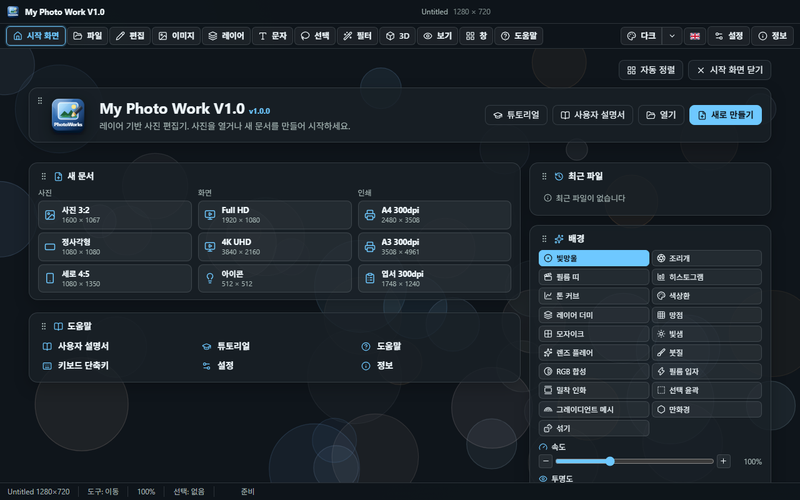
시작 화면과 움직이는 배경
메뉴 막대 맨 왼쪽의 시작 화면 단추로 언제든 열고 닫습니다. 도움말 메뉴에도 같은 항목이 있습니다. 편집 중인 문서는 시작 화면 뒤에 그대로 있고, 일을 시작하는 명령을 고르면 시작 화면이 저절로 닫힙니다.
카드는 다음과 같습니다.
카드
하는 일
제목
프로그램 이름과 버전, 튜토리얼, 사용자 설명서, 열기, 새로 만들기 단추
새 문서
사진·화면·인쇄 크기 아홉 가지. 누르면 그 크기의 흰 문서를 만듭니다
최근 파일
최근에 연 파일. ✕ 로 하나씩, 목록 지우기 로 전부 지웁니다
배경
배경 18종과 속도, 투명도, 자동 변경 간격, 시작할 때 무작위
도움말
사용자 설명서, 튜토리얼, 도움말, 키보드 단축키, 설정, 정보
샘플 그림
연습용 그림 여섯 장. 누르면 새 문서로 열립니다
카드는 ⠿ 손잡이를 끌어 옮기고, 오른쪽 아래 모서리를 끌어 크기를 바꿉니다. 모서리를 두 번 누르면 내용에 맞는 높이로 돌아갑니다. 손잡이에 초점을 두고 Alt+화살표 로 옮기고 Alt+Shift+화살표 로 크기를 바꿀 수도 있습니다. 맨 위의 자동 정렬 은 처음 배치로 되돌립니다.
배경은 빛망울, 조리개, 필름 띠, 히스토그램, 톤 커브, 색상환, 레이어 더미, 망점, 모자이크, 빛샘, 렌즈 플레어, 붓질, RGB 합성, 필름 입자, 밀착 인화, 선택 윤곽, 그레이디언트 메시, 만화경 의 18종이며 현재 테마의 색으로 그려집니다. 속도 는 0–300%(0 이면 멈춤), 투명도 는 0–100%(100 이면 테마의 단색 배경만 남음)입니다. 섞기 를 켜거나 자동으로 바꾸는 간격 을 정하면 그 간격마다 다른 배경으로 바뀝니다.
설정에서 바꾸기
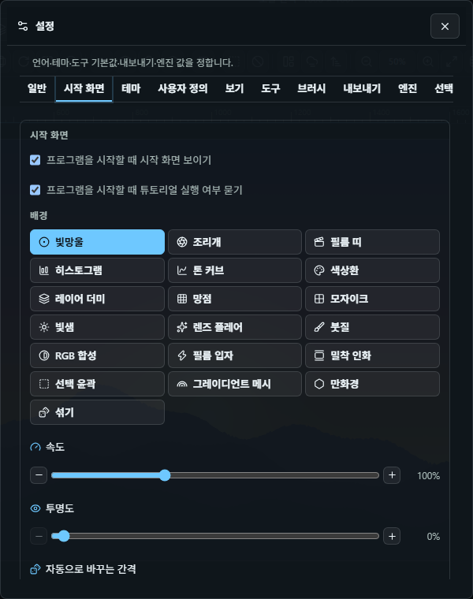
설정 창의 시작 화면 탭
설정 → 시작 화면 탭에서 같은 값을 바꿉니다. 바꾸는 즉시 시작 화면에 반영됩니다. 여기에는 프로그램을 시작할 때 시작 화면을 보일지, 튜토리얼 실행 여부를 물을지 고르는 칸과, 배경 기본값, 카드 배치 초기화, 지금 시작 화면 보기 단추가 더 있습니다.
튜토리얼
프로그램을 시작하면 튜토리얼을 실행할지 묻습니다. 실행 을 누르면 실제 화면을 짚어 가며 시작 화면, 메뉴, 툴바, 도구, 옵션 막대, 캔버스, 패널, 테마, 도움말을 차례로 안내합니다. 나중에 를 누르면 닫힙니다. 다음에도 이 창 보이기 를 끄면 다시 묻지 않으며, 설정 → 시작 화면에서 다시 켤 수 있습니다.
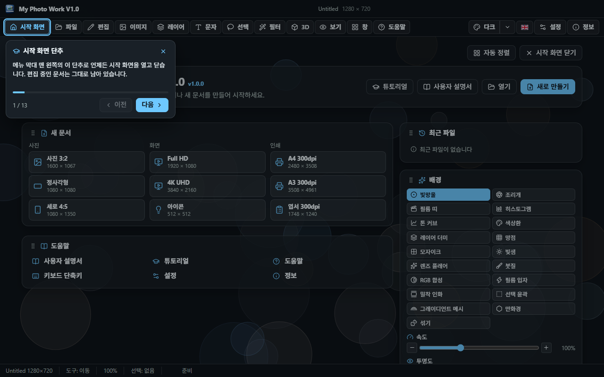
튜토리얼이 시작 화면 단추를 짚은 모습
안내 카드의 다음, 이전 단추나 키보드의 →(또는 스페이스), ← 로 움직이고 Esc 로 끝냅니다. 언제든 도움말 → 튜토리얼 이나 시작 화면의 튜토리얼 단추로 다시 볼 수 있습니다.
창
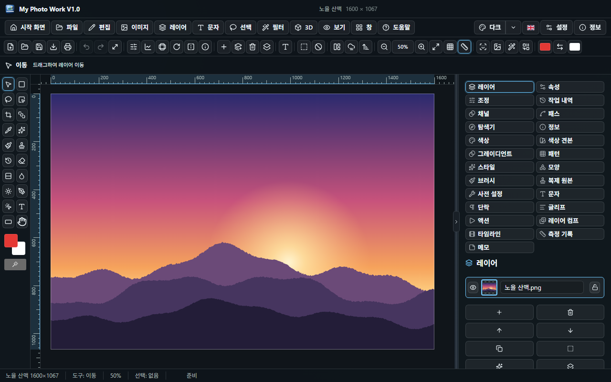
편집 화면
캔버스 위에 네 줄이 있습니다.
줄
무엇이 있는가
제목 표시줄
앱 아이콘, 문서 이름과 크기, 창 단추
문자 도구
옵션 막대의 가로 문자, 세로 문자 단추나 툴바의 같은 단추로 방향을 고른 뒤 그림을 클릭해 입력합니다
메뉴 막대
맨 왼쪽의 시작 화면 단추, 그 뒤로 모든 명령을 갈래로 묶어: 파일, 편집, 이미지, 레이어, 문자, 선택, 필터, 3D, 보기, 창, 도움말 — 그 뒤에 테마 단추(누르면 다음 테마, 화살표로 고르기), 언어 전환, 설정, 정보
툴바
늘 손이 가는 명령을 아이콘으로 — 축소와 확대 단추 사이에 확대 비율 — 이어서 피사체 선택 / 배경 제거 / 생성형 채우기 / 하모나이즈, 그리고 전경–교환–배경 색
옵션 막대
지금 도구와 그 설정, 그리고 그 도구가 무엇을 하는지 한 줄 설명
도구 막대는 왼쪽 가장자리를 따라 내려갑니다. 이미 켜져 있는 그룹을 다시 누르면 그 그룹의 도구를 차례로 돌아갑니다. 플라이아웃 그룹이 그렇게 동작합니다.
메뉴와 모든 대화상자는 각각 별도의 창으로 열립니다. 아무 데로나 끌 수 있고, 긴 메뉴는 앱 밖으로 걸쳐도 되며, 모두 앱과 함께 닫힙니다. 대화상자를 여는 단추를 다시 누르면 새 창을 만들지 않고 이미 열린 창을 앞으로 가져옵니다.
메뉴는 주요 명령을 한 목록으로 보여 주고, ▸ 로 끝나는 행은 그룹을 뜻합니다 — 필터의 흐림·예술 효과·스케치, 레이어의 마스크, 이미지의 조정 — 이 행에 마우스를 올리거나 누르면 그 그룹이 행 옆에 작은 하위 메뉴로 열립니다. Photoshop 메뉴와 같은 방식이고, 더는 여러 열로 나누지 않습니다.
창은 1280px 보다 좁아지지 않습니다. 툴바가 단추를 다 보여 주면서 한 줄을 지키는 데 필요한 너비입니다. 크기 조절 손잡이는 오른쪽 아래 구석에 삼각형으로 모인 점들입니다. 창의 위치와 크기는 다음 실행 때도 기억합니다.
도구를 고르면 그림 위의 마우스 포인터 가 그 도구에 맞게 바뀝니다. 손 도구는 손 모양(누르면 쥔 손), 돋보기는 확대 모양(Alt 를 누르면 축소 모양), 문자 도구는 문자 커서, 이동 도구는 이동 모양입니다. 그 밖의 도구는 작업할 픽셀을 가리키는 십자선 옆에 도구 아이콘이 함께 나옵니다. 브러시처럼 크기가 있는 도구는 현재 크기와 확대 비율에 맞는 원 도 함께 보입니다. 복제 도장은 Alt 를 누르는 동안 원본을 찍는 십자선이 됩니다. 그림 바깥과 눈금자 위에서는 보통 화살표입니다.
눈금자에는 마우스 위치가 붉은 선 으로 표시됩니다. 격자는 5×5 입니다. 가는 선 다섯 칸마다 굵은 선이 오고, 확대 비율이 바뀌면 칸의 크기가 다섯 배씩 바뀌어 늘 읽기 좋은 간격을 유지합니다.
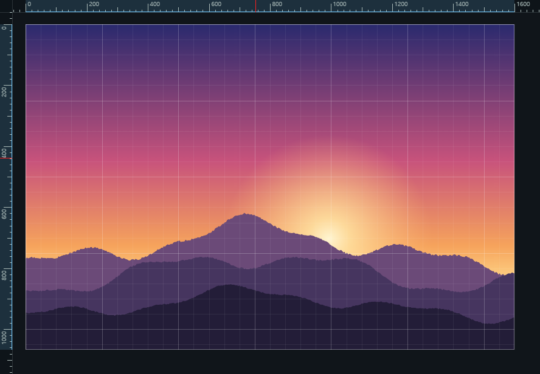
5×5 격자와 눈금자의 붉은 마우스 위치선
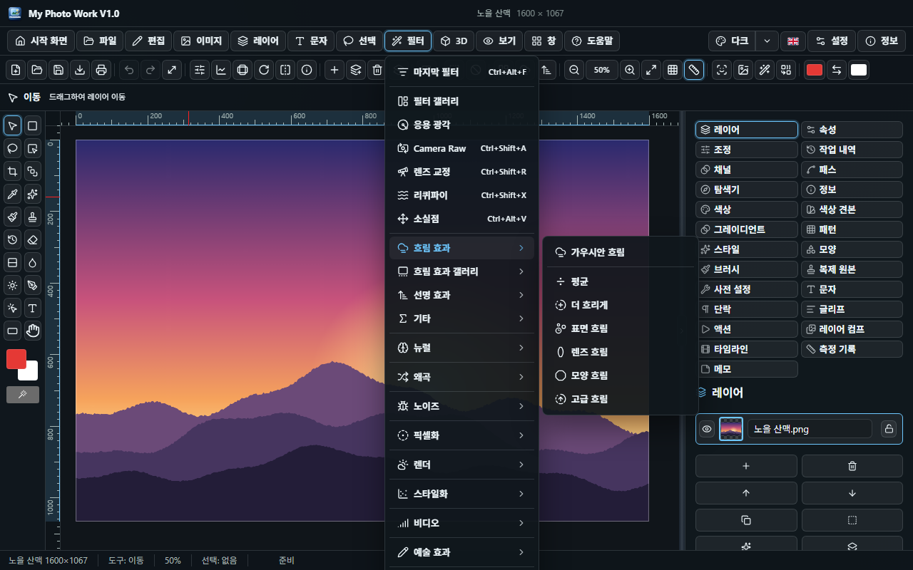
필터 메뉴와 하위 메뉴
확대 비율은 툴바의 축소와 확대 사이에 있습니다. 그 두 단추가 바꾸고 있는 숫자로 읽히는 자리입니다. 누르면 100% 로 돌아갑니다.
도구
선택
키
도구
하는 일
M / Shift+M
사각형·타원 선택 윤곽
끌어서 사각형이나 타원으로 선택
M
행·열 선택
눌러서 1픽셀 가로줄이나 세로줄을 선택
L
올가미
손으로 끌어 윤곽을 그림
Shift+L
다각형 올가미
모서리마다 눌러 가며 그림. Enter 나 더블클릭으로 닫힘
L
자석 올가미
가장자리를 따라가면 윤곽이 붙음. 가장자리 폭이 얼마나 멀리 보는지를 정함
W
자동 선택·빠른 선택
눌러서 비슷한 색 영역을 가져옴. 허용치가 얼마나 비슷해야 하는지를 정함
W
개체 선택
한 번 누르면 피사체를 가져옴
Ctrl/Cmd+A 로 전체 선택, Ctrl/Cmd+D 로 선택 해제합니다. Ctrl/Cmd+Shift+D 는 마지막 선택을 되살립니다. 실수로 선택을 푼 뒤 찾을 것이 이것입니다.
이미 있는 선택 영역 고치기
아래는 모두 선택 메뉴에 있고, 선택 윤곽으로 그렸든 올가미로 그렸든 자동 선택으로 가져왔든 지금 선택된 것에 그대로 동작합니다.
명령
하는 일
선택 영역 넓히기
지정한 픽셀만큼 가장자리를 바깥으로 밀어냄
선택 영역 좁히기
같은 만큼 안으로 당김. 캔버스 가장자리와 만나는 곳도 포함
선택 테두리
선택 영역을 그 가장자리를 걸치는 띠로 바꿈 — 도형이 아니라 도형의 윤곽을 선택
선택 매끄럽게
모서리를 둥글리고 바늘구멍을 메우며 1픽셀 돌기를 없앰. 너덜너덜한 자동 선택의 처방
잔물결(페더)
가장자리를 부드럽게 해 다음에 하는 일이 뚝 끊기지 않고 흐려지게 함
인접 영역 확장
이미 선택된 픽셀과 닮은, 맞닿은 픽셀로 번져 나감
유사 영역 선택
이어져 있든 아니든 그 색의 모든 픽셀을 가져옴
색상 범위
색만으로 선택: 현재 전경색에 가까운 모든 것
인접 영역 확장과 유사 영역 선택은 자동 선택과 같은 허용치를 쓰며, 설정에서 정합니다. 색상 범위는 자기 허용치 슬라이더가 있어 창을 떠나지 않고 폭을 넓히거나 좁힐 수 있습니다. 모두 Ctrl/Cmd+Z 로 되돌릴 수 있습니다.
선택 메뉴에는 선택 반전, 방해 요소 찾기, 그리고 한 번에 배경을 없애는 명령도 있습니다.
복사, 붙여넣기, 칠하기, 선 그리기
편집 메뉴에 있습니다.
명령
키
하는 일
잘라내기
Ctrl/Cmd+X
선택한 픽셀을 활성 레이어에서 떼어 냄
복사
Ctrl/Cmd+C
활성 레이어에서 복사
병합하여 복사
Ctrl/Cmd+Shift+C
선택 영역이 보여 주는 이미지 전체를, 모든 레이어를 합쳐 복사
붙여넣기
Ctrl/Cmd+V
복사한 것을 새 레이어로 놓음
선택 영역 안에 붙여넣기
—
같지만 현재 선택 영역으로 가려져 그 안에만 보임
칠
—
선택 영역을 전경색·배경색·흰색·검정으로, 고른 불투명도로 채움
선(획)
—
선택 영역의 가장자리를 따라 안쪽·바깥쪽·가운데로 선을 그림
브라우저가 허용하는 범위에서 복사본은 시스템 클립보드에도 올라가므로 다른 프로그램에 붙여 넣을 수 있습니다. 아무것도 선택하지 않았으면 복사는 레이어 전체를 가져옵니다. 붙여넣기는 선택 영역이 있는 자리에, 없으면 문서 가운데에 놓습니다.
그리기와 리터치
키
도구
하는 일
B
브러시, 연필
칠하기. [ 와 ] 로 크기, 경도로 가장자리를 정함
B
색상 대체
누른 색을 전경색으로 다시 칠함
E
지우개, 배경 지우개, 자동 지우개
획으로, 색으로, 또는 한 번 눌러 영역째 지움
S
복제 도장
Alt+클릭으로 원본을 정하고 끌어서 그곳에서 복제
J
스팟 복구, 복구, 패치
티를 섞어 없앰. 패치 도구는 선택 영역을 깨끗한 픽셀 위로 끎
J
내용 인식 이동
선택 영역을 다른 곳으로 끌면 빈자리가 채워짐
O
닷지, 번, 스폰지
브러시 아래를 밝게, 어둡게, 또는 채도를 바꿈
—
흐림, 선명, 손가락
끄는 자리를 부드럽게, 선명하게, 또는 문지름
G
페인트 통, 그레이디언트
플러드 필, 또는 다섯 가지 그레이디언트 중 하나를 끎
모양, 패스, 문자
키
도구
하는 일
P
펜
누르면 모서리, 끌면 곡선. Enter 로 닫음
Shift+P
곡률 펜
누르기만 하면 곡선을 알아서 매끄럽게
P
자유 형태 펜
손으로 패스를 그림
A / Shift+A
패스 선택, 직접 선택
패스 전체를 옮기거나 기준점과 핸들을 끎
U
사각형, 둥근 사각형, 타원, 다각형, 선, 사용자 정의
끌어서 그림. Shift 로 정형. 각각 편집할 수 있는 모양 레이어가 됨
T / Shift+T
문자, 세로 문자
누르고, 치고, 확인
패스를 선택하면 옵션 막대에서 획을 두르거나 칠하거나 선택 영역으로 바꾸거나 지울 수 있습니다.
자르기, 재기, 보기
키
도구
하는 일
C
자르기
상자를 끌고 Enter 로 적용, Esc 로 취소
Shift+C
원근 자르기
네 모서리를 누르고 Enter 로 똑바르게
C
분할 영역
따로 내보낼 영역을 끎
K
프레임
프레임을 끌면 레이어가 그 안에만 보임
I
스포이드, 색상 샘플러
색을 뜨거나 표식을 남김
I
눈금자
끌어서 잼. 거리와 각도가 정보 패널에 나옴
I
메모, 카운트
메모나 번호 표식을 남김
H / Space
손
화면 이동
R
뷰 회전
끌어서 뷰를 돌림. 더블클릭으로 똑바르게
Z
돋보기
눌러서 확대, Alt+클릭으로 축소
X
색 교환
전경색과 배경색을 맞바꿈
Ctrl/Cmd+휠로 확대·축소, 휠이나 Space+드래그로 화면 이동합니다.
보기 메뉴에서 격자와 눈금자를 켭니다. 눈금자는 문서 픽셀로 읽습니다. 숫자마다 전체 높이 선, 그 둘 사이에 반 높이 표시, 10분의 1마다 짧은 표시입니다.
변형
Ctrl/Cmd+T 로 활성 레이어의 자유 변형을 시작합니다. 모서리를 끌면 크기, 상자 위의 손잡이를 끌면 회전, 상자 자체를 끌면 이동입니다.
모서리에서 Shift 는 비율을 지키고, 회전 손잡이에서는 15° 단위로 붙습니다
Alt 는 가운데를 기준으로 크기를 바꿉니다
손잡이를 반대편 가장자리 너머로 끌면 레이어가 뒤집힙니다
옵션 막대에서 정확한 폭·높이·각도를 넣을 수 있고 자체 뒤집기 단추가 있습니다
Enter 로 적용, Esc 로 취소
이미지 메뉴는 문서 전체를, 레이어 메뉴는 레이어 하나를 회전하거나 뒤집습니다.
레이어
오른쪽 패널이 레이어를 위에서 아래로 나열합니다.
눈과 자물쇠가 표시 여부와 편집 가능 여부를 다룹니다
불투명도, 칠 불투명도, 혼합 모드는 합성할 때 적용됩니다
레이어 메뉴에서 추가·복제·삭제·병합·이미지 병합·그룹·그룹 해제
보이는 레이어 병합은 켜져 있는 레이어만 합치고 숨긴 것은 그대로 둡니다. 이미지 병합은 전부 가져갑니다
클리핑 마스크는 바로 아래 레이어에 픽셀이 있는 곳에만 이 레이어가 보이게 합니다 — 질감이나 색 덧칠, 조정을 아래 모양 안에 가두는 방법입니다
평범한 래스터 레이어 말고도 조정, 칠, 살아 있는 문자, 모양, 그룹 레이어가 있습니다. 조정 레이어는 자기 아래에 칠해진 모든 것을 바꾸며 언제든 끌 수 있습니다.
레이어를 화면 밖으로 끌고 나갔다 들어와도 잘리지 않습니다. 이동은 늘 레이어의 손대지 않은 픽셀에서 다시 재생되기 때문입니다.
고급 개체와 고급 필터
레이어 ▸ 고급 개체로 변환으로 레이어를 고급 개체로 만들 수 있습니다. 그 순간 레이어가 그리고 있던 것이 손대지 않은 원본으로 얼어붙고, 문서는 매번 그 원본에서 그립니다. 엄지손톱만 하게 줄였다 다시 키워도 또렷하게 돌아옵니다. 두 번 리샘플링된 적이 없기 때문입니다.
고급 레이어에 필터를 걸면 픽셀에 손대지 않고 그 레이어의 고급 필터 스택에 얹힙니다. 레이어 패널에 목록이 나옵니다. 항목마다 스위치와 세기, 그리고 휴지통이 있습니다. 하나를 끄면 그 아래 이미지는 정확히 이전 그대로입니다. 영구히 굳히고 싶을 때 레이어 래스터화가 배치와 스택 전체를 평범한 픽셀로 구워 냅니다.
채널
오른쪽 패널의 채널 탭은 그림을 빨강·초록·파랑으로 나눠 보여 주고, 저장한 선택 영역을 보관합니다.
선택 ▸ 선택 영역 저장이 현재 선택을 이름 붙인 알파 채널로 남깁니다.
선택 ▸ 선택 영역 불러오기가 그것을 되살립니다. 그대로 가져오거나 지금 선택된 것과 합칩니다: 바꾸기 / 더하기 / 빼기 / 교차.
패널이 저장된 것을 나열합니다. 이름을 누르면 불러오고, 옆의 휴지통이 버립니다.
저장한 선택 영역은 .mpw 파일에 함께 실려 가므로, 공들여 만든 마스크는 내일도 그 자리에 있습니다.
더 많은 변형
편집 ▸ 자유 변형이 크기와 회전을 맡습니다. 편집 메뉴의 나머지가 그것이 못 하는 일을 합니다.
명령
하는 일
기울이기
위와 아래를, 또는 양옆을 서로 어긋나게 밀어냅니다
왜곡
네 모서리를 각각 x·y 로 따로 옮깁니다
원근
한쪽 가장자리를 좁혀 이미지가 기울어 보이게 합니다
뒤틀기
열한 가지 모양 — 아치, 돌출, 깃발, 물결, 물고기 등 — 으로 구부립니다. 구부리기 슬라이더 하나와 왜곡 슬라이더 둘이 붙습니다
퍼펫 뒤틀기
그대로 있어야 할 부분에 핀을 꽂고, 핀을 끌어 그 부분을 움직입니다. Enter 로 적용, Esc 로 취소
내용 인식 비율
가장 재미없는 열부터 깎아 내며 크기를 바꿔 피사체가 모양을 지키게 합니다. 피부톤 보호가 기본으로 켜져 있어 이음매가 얼굴과 팔을 피해 갑니다. 사람이 없는 사진에서는 끄세요. 모든 레이어를 같은 이음매로 깎으므로 서로 어긋나지 않습니다
내용 인식 비율, 그리고 사람을 지키는 일
평범한 크기 조절은 모든 것을 똑같이 눌러 찌그러뜨립니다. 이것은 위에서 아래로 이어지는 가장 텅 빈 픽셀 열 — 하늘 한 자락, 평평한 벽, 잔잔한 물 — 을 찾아 들어내고, 원하는 폭이 될 때까지 되풀이합니다. 피사체는 비율을 지키고 빈 곳이 양보합니다.
그냥 두면 사람 사진에서 잘못됩니다. 그림의 어느 부분이 얼마나 복잡한지를 재는데 피부는 매끈하기 때문입니다. 뺨은 뒤의 잎사귀보다 벌어지는 일이 적어서, 깎아 내기가 얼굴을 먹고 울타리는 그냥 둡니다. 피부톤 보호가 그 답이며 기본으로 켜져 있습니다. 질감이 아니라 색으로 피부를 알아보고, 윤곽까지 덮어, 이음매가 돌아가게 합니다.
사람이 없는 사진 — 풍경, 정물, 도표 — 에서는 끄세요. 지킬 것이 없고 보호는 방해만 될 수 있습니다. 흑백 스캔이나 DICOM 한 장처럼 회색 음영인 것에는 이미 사실상 스스로 꺼집니다. 피부로 오인할 색이 거기에는 없기 때문입니다.
이음매는 평평하게 합친 그림에서 고르고 모든 레이어를 같은 이음매로 깎으므로, 여러 레이어가 찢어지지 않고 나란히 남습니다.
문자
문자 ▸ 문자 입력(또는 문자 도구)이 문자 레이어 전체를 위한 창 하나를 엽니다.
글 자체를, 몇 줄이든.
글자 크기 / 행간 / 자간 / 들여쓰기 / 단락 간격 — 빈 줄이 새 단락을 시작하고, 들여쓰기는 각 단락의 첫 줄에 적용됩니다.
정렬, 굵게, 기울임.
패스 위의 문자 — 패스를 고르면 글이 그것을 따라가며, 글자마다 곡선을 향해 돌아갑니다.
모양과 구부리기가 완성된 글자를 레이어 뒤틀기와 같은 열한 가지 모양으로 뒤틉니다.
문자 레이어를 선택한 채 창을 열면 새 레이어를 더하지 않고 그 레이어를 고칩니다.
색상 모드, 비트 깊이, 프로파일
이미지 ▸ 모드가 문서를 RGB, 회색조, CMYK, Lab 사이에서 바꿉니다. 레이어 자체는 RGBA 그대로이고 모드는 문서를 합성할 때 적용되므로, 되돌아가는 데 드는 비용도 잃는 것도 없습니다.
이미지 ▸ 8비트/채널과 16비트/채널이 작업 깊이를 정합니다. 16비트에서는 조정이 온전한 정밀도로 계산되고 TIFF 가 채널당 16비트로 기록됩니다. 사진을 세게 보정하거나 다른 곳에 넘길 때 쓸 설정입니다.
이미지 ▸ 색상 프로파일이 편집기가 아는 네 가지 작업 공간 중 하나를 ICC 표준이 부르는 이름으로 고르고, 둘 중 하나를 합니다.
프로파일 지정은 숫자를 그대로 두고 그것을 읽는 방식을 바꿉니다. 태그 없이 온 파일이고 그것이 무엇인지 알 때 씁니다.
프로파일 변환은 새 공간에서도 색이 같아 보이도록 숫자를 다시 씁니다.
ICC 프로파일을 지닌 JPEG 는 그것을 읽어 여기와 이미지 정보 창에 이름을 보여 줍니다. 밋밋해 보이는 사진을 짐작하는 대신 설명할 수 있습니다.
액션, 일괄 처리, 레이어 컴프
액션 탭이 한 일을 기록해 다시 재생합니다.
기록 시작을 누른 뒤 평소처럼 작업합니다. 메뉴 명령 하나하나와 창의 답 하나하나가 적힙니다.
이름을 붙여 저장합니다. 액션은 설정과 함께 보관되므로 다음에도 그대로 있습니다.
▶ 가 열린 문서에 재생합니다. 재생 중에는 창이 열리지 않습니다 — 처음에 주었던 답을 다시 씁니다.
옆의 레이어 단추가 폴더 전체에 액션을 돌리며 현재 내보내기 형식으로 하나씩 저장합니다. 데스크톱 앱이 필요합니다.
같은 탭의 레이어 컴프는 어떤 레이어가 어떤 불투명도와 혼합 모드로 보이고 있는지를 기억합니다. 배치를 원하는 만큼 담아 두고 하나를 눌러 되돌립니다. 한 문서 안에 디자인 세 가지를 보관하는 방법입니다.
애니메이션과 동영상
타임라인 탭이 프레임 단위 애니메이션을 만듭니다.
프레임이 보여 줄 대로 레이어를 맞춘 뒤 프레임 추가.
프레임마다 자기 지연 시간(밀리초)이 있습니다.
▶ 가 문서 안에서 재생하고 네모가 멈춥니다.
GIF로 내보내기가 애니메이션 GIF 를 씁니다. 앱이 직접 인코딩하고 프레임마다 팔레트를 고르므로 첫 프레임에서 색을 빌려 오지 않습니다.
동영상으로 내보내기가 프레임을 WebM 동영상으로 녹화합니다.
파일 ▸ 동영상 가져오기가 동영상 파일을 고르게 나눈 열두 프레임으로 뜹니다. 각각이 레이어이자 타임라인 프레임이 되어 곧바로 고치거나 다시 내보낼 수 있습니다.
패턴과 브러시
편집 ▸ 패턴 정의가 선택 영역을 — 아무것도 선택하지 않았으면 레이어 전체를 — 타일로 보관합니다. 정의한 패턴은 편집 ▸ 칠 창에 나타나고, 거기서 하나를 고르면 색으로 채우는 대신 선택 영역에 타일로 깝니다. 패턴 칠 레이어도 그것을 되풀이합니다.
설정 창의 브러시 구획이 브러시 모양을 정합니다. 찍는 자국 사이의 간격, 각도, 원형률(100 아래면 납작해집니다), 그리고 자국을 선 밖으로 흩뿌려 획을 스프레이로 만드는 분산. 현재 모양을 이름 붙여 저장하면 다음부터는 한 번 누르면 됩니다.
3D
3D ▸ 돌출(3D)이 활성 레이어를 빛이 닿는 입체로 바꿉니다. 평평한 그림이 앞면이 되고 그 뒤로 깊이가 세워집니다.
두께는 얼마나 뒤로 가는지.
X축 / Y축 / Z축 회전이 공간에서 돌립니다.
원근 강도는 먼 쪽이 얼마나 줄어드는지. 0이면 평평한 시점입니다.
조명 X / Y 가 빛을 옮깁니다. 빛을 향한 면은 밝아지고 옆면은 어두워집니다.
레이어는 계속 편집할 수 있습니다 — 그 위에 칠하면 새 그림으로 입체가 다시 세워집니다. 3D ▸ 3D 해제가 다시 평평하게 만들고, 레이어 ▸ 래스터화가 렌더 결과를 픽셀로 굽습니다.
조정과 필터
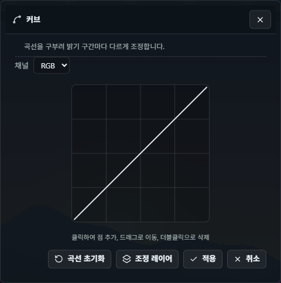
커브 창
이미지 메뉴에 명도/대비, 색조/채도, Camera Raw, 커브, 레벨, 자동 레벨, 반전, 회색 음영, 그리고 아래의 색 작업이 있습니다.
명령
무엇에 쓰는가
자동 색상
빨강·초록·파랑을 각각 따로 늘려 사진의 색 기울기를 빼냅니다. 자동 레벨은 셋을 함께 옮기므로 기울기가 그대로 남습니다
평준화
밝기마다 똑같이 흔해지도록 톤을 펼칩니다. 밋밋하고 뿌연 이미지를 열어 줍니다
채널 혼합
출력 채널 하나하나를 입력 세 채널과 상수로 만듭니다. 제대로 된 흑백 변환으로, 또는 채널을 통째로 바꾸는 길로
선택 색상
한 색 갈래 — 빨강 계열, 파랑 계열, 중성색 — 안의 시안·마젠타·노랑·검정을 옮기고 나머지는 그대로 둡니다
그레이디언트 맵
이미지 자신의 밝기에서 두 색 그레이디언트를 읽어 다시 칠합니다. 듀오톤과 스플릿 토닝이 여기서 나옵니다
색상 바꾸기
전경색에 가까운 모든 것을 다른 색으로 바꿉니다. 허용치 가장자리에서 흐려지므로 딱딱한 테두리가 남지 않습니다
180도 회전과 여백 잘라내기도 같은 메뉴에 있습니다. 여백 잘라내기는 보이는 것 주위의 완전히 투명한 테두리를 잘라 내므로, 배경을 지운 뒤에 돌릴 명령입니다.
레벨은 입력 검정 점·감마·흰색 점과 출력 범위를 정합니다. 레이어에서 값을 읽어 오는 자동 단추가 있습니다.
둘 다 레이어에 바로 적용하거나 조정 레이어로 얹을 수 있습니다.
필터 메뉴에 갤러리가 있습니다. 필터 갤러리 창은 그룹마다 탭 하나이고, 그 그룹의 필터가 단추 격자로 놓이며, 슬라이더 둘이 그 옆에 붙고, 창은 고정 크기로 결코 스크롤하지 않으므로 취소와 적용은 늘 있던 자리에 있습니다. 메뉴가 나열하는 그룹은 이렇습니다.
흐림 — 가우시안, 동작, 상자, 그리고 회전이나 확대로 도는 방사형 흐림
선명 — 선명 효과, 언샵 마스크(한계값이 있어 가장자리만 선명해지고 평평한 곳은 그대로), 하이 패스
노이즈 — 노이즈 추가, 중간값(얼룩을 없앱니다), 먼지와 스크래치(픽셀이 이웃에서 멀 때만 작동하는 중간값이라 진짜 디테일은 살아남습니다)
픽셀화 — 모자이크, 수정화
왜곡 — 픽셀 유동화, 소용돌이, 잔물결, 파형, 구형화, 핀치
스타일화 — 가장자리 찾기, 엠보스, 솔라리제이션
렌더 — 구름, 비네팅, 렌즈 플레어
기타 — 오프셋, 최소값(어두운 쪽을 넓힘), 최대값(밝은 쪽을 넓힘)
예술 효과 — 유화. 뉴럴 — 피부 보정
갤러리는 마지막에 쓴 흐림·선명 창의 반경과 양을 가져오므로, 기본값이 너무 세면 그쪽을 먼저 맞추세요.
생성형 작업 — 내용 인식 채우기, 생성형 확장, 생성형 확대, 하모나이즈, 피사체 선택, 배경 제거, 방해 요소 찾기 — 는 이 컴퓨터에서 돕니다. 클라우드 모델을 쓰지 않습니다.
선택 영역이 있으면 이 모든 것이 활성 레이어의 선택된 픽셀로 한정됩니다.
파일
열기 는 문서를 이미지나 .mpw 프로젝트로 바꿉니다
이미지 가져오기 는 파일을 새 레이어로 더합니다
저장 / 다른 이름으로 저장 은 레이어가 살아 있는 .mpw 프로젝트를 씁니다
내보내기 는 PNG, JPG, WebP, AVIF, GIF, TIFF 로 평평하게 만들어 내보냅니다
인쇄 는 페이지를 미리 보여 준 뒤 프린터로 보냅니다
이미지 정보 는 열려 있는 것에 대해 아는 것을 모두 나열합니다
분할 영역 선택 도구로 영역 하나만 따로 내보낼 수 있습니다
저장하지 않은 변경은 새로 만들기·열기·닫기·종료 전에 확인합니다.
사진 열기
파일 ▸ 열기(Ctrl/Cmd+O), 툴바의 폴더 단추, 창 위로 파일 끌어다 놓기 — 모두 같은 일을 합니다. 여러 파일을 한꺼번에 놓아도 됩니다. 손대지 않은 문서 위에서는 차례로 열리고, 이미 편집한 문서 위에서는 새 레이어로 들어옵니다.
편집기는 PNG, JPG, GIF, BMP, WebP, AVIF, TIFF, HEIC / HEIF, DICOM, 그리고 자기 .mpw 프로젝트를 읽습니다.
HEIC·HEIF 사진
휴대폰과 미러리스 카메라는 최고 화질 사진을 HEIF 로 저장합니다 — iPhone 은 .heic, 그 밖에는 .heif, 후지필름 바디는 .hif. 어떤 브라우저도 그 파일을 보여 주지 못하므로 편집기가 직접 디코딩합니다.
파일 ▸ 열기에서 .heic 파일을 고르거나 창 위로 끌어다 놓습니다.
한 세션의 첫 HEIC 는 디코더를 불러오느라 조금 더 걸립니다 — 2메가바이트쯤이고, 한 번 받으면 그다음 파일부터는 그대로 씁니다.
사진이 원래 해상도 그대로 평범한 래스터 레이어로 열립니다. 그때부터 모든 도구와 조정과 필터가 JPG 에서와 똑같이 동작합니다.
프레임을 여러 장 담은 HEIC — 연사나 Live Photo 의 스틸 — 은 카메라가 갤러리에서 보여 주는 primary 프레임으로 열리고, 이미지 정보 창이 파일이 몇 프레임을 담고 있었는지 알려 줍니다.
HEIC 로 되저장하는 기능은 제공하지 않습니다. 이 형식의 인코더는 특허에 묶여 있어 앱에 들어 있지 않습니다. 내보내기로 PNG(화질 손실 없음), TIFF(화질 손실 없음, 더 큼), JPG 중에 고르세요.
프로젝트 폴더의 images/test04.heic 가 시험해 볼 수 있는 예제입니다. Nokia 의 공개 HEIF 적합성 세트에서 왔고, 원하면 언제든 직접 찍은 사진으로 바꾸세요.
내보내기와 투명 배경
파일 ▸ 내보내기(또는 툴바의 내려받기 단추)가 조작부 둘이 있는 작은 창을 엽니다.
형식 — PNG, JPG, WebP, AVIF, GIF, TIFF.
투명 배경 유지 — 그림의 비치는 부분이 파일에서도 비칠지.
켜면 지운 자리, 투명 배경으로 만든 문서, 흐리게 한 레이어가 투명함을 지닌 채 기록됩니다. 끄면 같은 그림이 먼저 흰 종이 위에 놓입니다. 인쇄하거나 메일로 보내거나 흰 페이지에 올릴 사진에 필요한 쪽입니다.
이 항목은 실제로 투명함을 담을 수 있는 형식에만 적용됩니다: PNG, WebP, AVIF, GIF, TIFF. JPG 를 고르면 항목이 흐려지고 이유를 한 줄로 설명합니다 — JPEG 에는 알파 채널이 아예 없어서, 항목을 어떻게 해 두든 JPG 는 늘 흰 바탕에 기록됩니다. 어느 쪽이든 문서 자체는 달라지지 않고 내보낸 파일만 달라집니다.
두 선택 모두 기억되고 설정 창에도 있습니다. 거기서는 분할 영역 하나를 내보낼 형식도 정합니다.
인쇄
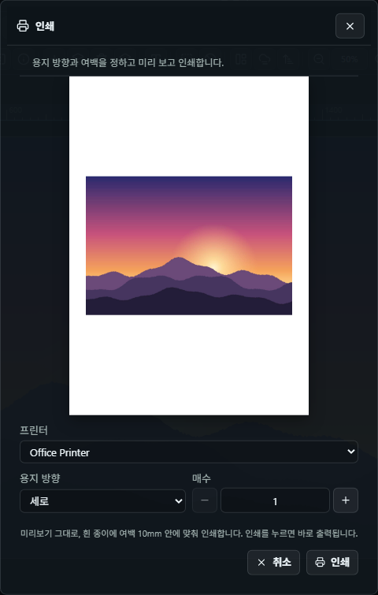
인쇄 창
파일 ▸ 인쇄, 툴바의 프린터 단추, 또는 Ctrl/Cmd+P.
창 하나가 열리고, 그것이 미리보기이자 인쇄 대화상자입니다 — 나올 모습 그대로의 페이지와 그 옆의 설정.
용지는 인쇄 페이지와 같은 10mm 여백으로 종이 비율에 맞춰 그려지고, 그 안에 그림이 흰 바탕 위에 평평하게 놓입니다 — 종이 위에서 투명함은 의미가 없습니다.
프린터는 이 컴퓨터의 프린터를 나열하며, 시스템이 기본이라 부르는 것이 이미 골라져 있습니다.
용지 방향은 그림에 맞는 쪽으로 시작합니다. 가로로 긴 사진이면 가로, 세로로 긴 사진이면 세로. 바꾸면 미리보기의 용지도 종이가 그러하듯 함께 돕니다.
매수는 몇 장을 인쇄할지.
인쇄가 작업을 그 프린터로 곧장 보냅니다. 취소는 창을 닫고 아무것도 인쇄하지 않습니다.
이 창은 고정 크기이며 결코 스크롤하지 않습니다. 용지, 설정 셋, 단추 둘이 한 화면에 함께 있고, 가로로 돌리면 무언가를 손 닿지 않는 곳으로 밀어내는 대신 용지가 짧아집니다.
이미지는 비율을 지킨 채 여백 안을 채우도록 맞춰지므로 잘리지도 늘어나지도 않습니다. 그림만 인쇄됩니다. 툴바도 패널도 배경도 나오지 않습니다.
브라우저에서는 브라우저 자신의 인쇄 대화상자 말고는 인쇄할 길이 없으므로 그쪽이 대신 열립니다. 거기에 자체 미리보기가 있고 프린터와 용지도 거기서 고릅니다. 그 안에서 PDF로 저장(또는 Microsoft Print to PDF)을 고르는 것이 문서를 PDF 로 얻는 가장 빠른 길입니다.
DICOM(.dcm) 의료 영상
CT, MR, 초음파, X선 검사는 DICOM 으로, 한 장당 파일 하나로 저장됩니다. .dcm(또는 .dicom)을 다른 이미지와 똑같이 열면 되고, 확장자가 아예 없는 파일은 내용을 보고 알아봅니다.
DICOM 파일은 화면 색이 아니라 측정값을 담고 있으므로, 편집기는 무엇이든 보여 주기 전에 뷰어가 하는 일을 합니다.
Rescale — 파일 안의 기울기와 절편이 저장값을 실제 단위로 바꿉니다. CT 라면 하운스필드 수치 같은 것입니다.
Window — 파일 안의 중심과 폭이 그 범위에서 화면이 보여 줄 구간을 고릅니다. 창을 명시하지 않은 파일은 자기 데이터로 윈도잉해 전체 범위가 보이게 하고, 거기서 이미지 ▸ 밝기/대비나 레벨이 방사선사의 윈도우 조작처럼 조정합니다.
0이 흰색을 뜻하는 MONOCHROME1 파일은 거기에 맞춰 반전합니다.
압축하지 않은 검사 — 암시적·명시적 VR, 리틀·빅 엔디안 — 와 베이스라인 JPEG 를 읽습니다. JPEG 2000, JPEG-LS, RLE 로 압축된 검사는 빈 이미지로 여는 대신 오류에 이름을 밝힙니다. 초음파 캡처 같은 컬러(RGB) 영상은 색을 지키고, 다중 프레임 파일은 첫 프레임으로 열립니다.
파일이 환자·검사·장비에 대해 말하는 모든 것이 아래에 설명한 이미지 정보 창에 있습니다. images/test05.dcm 가 시험해 볼 수 있는 예제 CT 한 장입니다. DICOM 표준 자체의 "CompressedSamples" 검사 파일 중 하나로, 적합성 시험용으로 재배포된 것입니다.
DICOM 으로 되저장하는 기능은 제공하지 않습니다. 이 프로그램은 사진 편집기이고, 그 위에 칠을 한 슬라이스는 더는 무엇의 기록도 아니기 때문입니다. PNG 나 TIFF 로 내보내세요.
이미지 정보
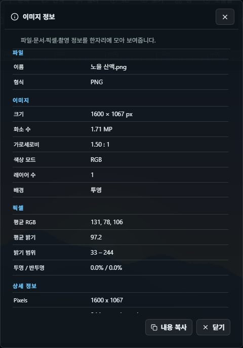
이미지 정보 창
이미지 ▸ 이미지 정보, 또는 툴바의 ⓘ 단추가 열려 있는 것에 대한 사실을 네 덩어리로 보여 주는 창을 엽니다.
파일 — 어떤 이름으로 열렸는지, 디스크의 어디에 있는지, 형식과 파일 크기.
이미지 — 픽셀 크기, 메가픽셀 수, 화면 비율, 색상 모드, 레이어가 몇 개인지, 배경이 무엇인지.
픽셀 — 파일이 아니라 지금 이 순간 평평하게 합친 문서에서 잽니다. 평균 R·G·B, 평균 밝기, 가장 어두운 픽셀에서 가장 밝은 픽셀까지의 범위, 그리고 그림의 얼마나가 완전히 또는 부분적으로 비치는지. 작업하면서 범위를 지켜보는 것이 조정이 검정을 뭉갰는지 밝은 곳을 날렸는지 알아보는 가장 빠른 길입니다.
상세 정보 — 파일 자신의 헤더가 지니고 있던 것. 카메라로 찍은 사진은 EXIF 를 보여 줍니다. 카메라와 렌즈, 찍은 날짜, 노출·조리개·ISO·초점 거리, 측광과 화이트 밸런스. PNG 는 비트 깊이와 색상 유형을. DICOM 은 태그를 — 모달리티, 검사와 시리즈, 환자, 장비, 슬라이스 두께와 픽셀 간격, 전송 구문과 적용된 윈도우. 아무것도 지니지 않은 파일은 지어낸 값을 보여 주는 대신 없다고 말합니다.
내용 복사가 창 전체를 평문으로 클립보드에 올립니다. 메모나 버그 보고에 붙여 넣을 것이 이것입니다.
이 창은 열리는 순간의 문서를 읽으므로, 편집한 뒤 새 수치를 보려면 닫았다 다시 여세요.
설정, 안내서, 정보
오른쪽 패널에는 스물다섯 개 탭이 있습니다 — 레이어, 속성, 조정, 작업 내역, 채널, 패스, 탐색기, 정보, 색상, 색상 견본, 그레이디언트, 패턴, 스타일, 모양, 브러시, 복제 원본, 도구 사전 설정, 문자, 단락, 글리프, 액션, 레이어 컴프, 타임라인, 측정 로그, 메모. 패널 위쪽에 한 줄에 셋씩 놓여 전부 보이고, 패널은 하나로 스크롤합니다. 창 메뉴로도, 탭을 눌러서도 오갈 수 있습니다.
메뉴 막대 오른쪽 끝에는 테마 조작부, 언어 전환(한국어 / English), 그리고 설정과 정보 창이 있습니다.
테마
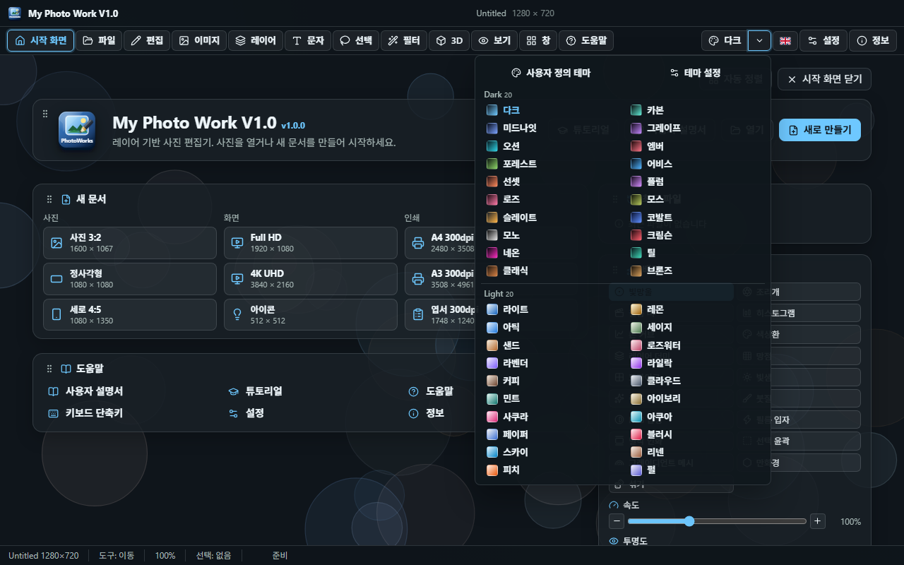
테마 드롭다운
테마는 Dark 20종과 Light 20종 입니다. 테마 조작부는 단추 둘이 하나로 되어 있습니다. 넓은 쪽을 누르면 다음 테마로 넘어가고(툴팁이 다음에 올 테마를 알려 줍니다), 옆의 화살표가 드롭다운을 엽니다. 드롭다운 맨 위에 사용자 정의 테마 와 테마 설정 단추가 있고, 그 아래에 Dark, 그 아래에 Light 가 세로 두 줄로 놓입니다. 직접 만든 테마가 있으면 단추 바로 아래에 함께 나옵니다.
설정 → 테마 탭에서도 같은 목록에서 고를 수 있습니다.
사용자 정의 테마
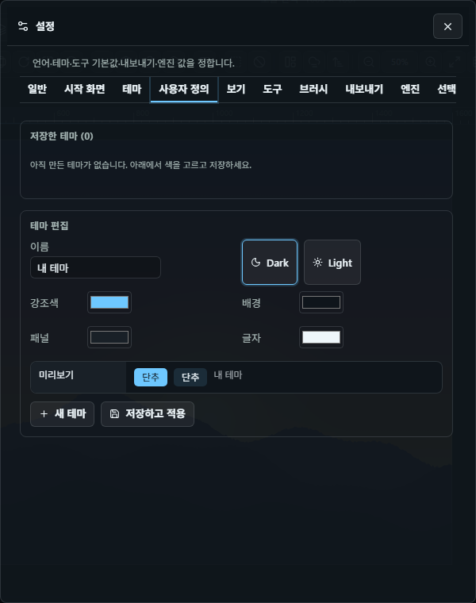
사용자 정의 테마 편집
설정 → 사용자 정의 탭에서 만듭니다. 이름을 적고 Dark 또는 Light 를 고른 뒤 강조색, 배경, 패널, 글자의 네 가지 색을 정하면 나머지 색은 거기서 계산됩니다. 미리보기를 보고 저장하고 적용 을 누르면 목록에 들어가고 바로 적용됩니다. 저장한 테마를 누르면 다시 편집할 수 있고, 휴지통 단추로 지웁니다. 설정을 기본값으로 되돌려도 만든 테마는 남습니다.
앱의 모든 수치 입력 칸은 같은 모양입니다. 양쪽에 −, + 단추가 있고 가운데에 값과 단위(px, %, °, ms 등)가 표시됩니다.
자르기 도구와 선택 도구의 옵션 막대에는 X, Y, W, H 칸이 있어, 자르기 상자와 선택 영역의 위치와 크기를 픽셀 단위로 정확히 정합니다. 칸 양쪽의 −, + 단추는 1px씩 움직이고, 위/아래 화살표 키도 같으며 Shift 를 함께 누르면 10px씩 움직입니다. 입력한 값은 Enter 를 누르거나 칸을 벗어날 때 적용되고, 상자가 그림 가장자리에 닿아 더 갈 수 없는 쪽의 단추는 꺼집니다. 올가미나 자동 선택으로 만든 영역은 모양을 유지한 채 옮겨지고 크기가 바뀝니다. 자르기는 비율을 골라 두면 한 변을 입력할 때 다른 변이 따라옵니다. 자르기 취소 단추는 그리던 상자를 지우고, 방금 적용한 자르기나 곧게 펴기는 되돌립니다.
우측 패널
패널 맨 위에는 지금 패널의 아이콘과 이름이 있고, 그 오른쪽의 화살표 단추, 툴바의 패널 접기/펼치기 단추, 창 → 패널 접기/펼치기, 또는 Tab 키로 접고 펼칩니다. 설정 항목은 모두 아이콘, 이름, 조절 막대가 한 줄에 놓입니다.
기본 제공 항목은 다음과 같습니다. 직접 저장한 항목은 그 아래에 따로 나옵니다.
패널
기본 제공
색상 견본
40색 (선명한 색, 진한 색, 파스텔, 연한 파스텔, 무채색과 흙빛)
그레이디언트
43종
패턴
40종. 누르면 현재 패턴이 되고, 두 번 누르면 선택 영역이나 레이어를 채웁니다
스타일
22종
모양
20종
브러시
24종
도구 사전 설정
22종
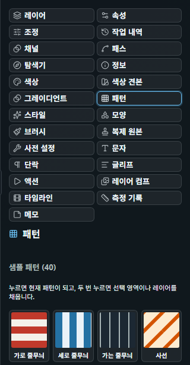
우측 패널의 패턴
마우스 오른쪽 단추
그림 위에서 오른쪽 단추를 누르면 실행 취소, 잘라내기·복사·붙여넣기, 선택, 레이어, 보기 명령이 나옵니다. 선택 영역이 있으면 그 영역에 대한 명령이 먼저 나옵니다. 레이어 패널의 줄에서는 그 레이어에 대한 명령이 나옵니다.
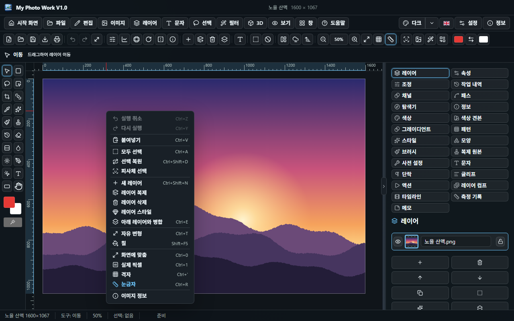
그림 위의 오른쪽 단추 메뉴
사용자 설명서
지금 읽고 있는 이 설명서는 자기 창으로 열립니다. 도움말 → 사용자 설명서(F1), 시작 화면의 사용자 설명서 단추 어느 쪽으로도 열 수 있습니다. 창 맨 위에서 글꼴, 글자 크기, 언어 를 바꾸며 이 설정은 다음에 열 때도 유지됩니다. 왼쪽은 목차이고, 읽는 위치가 표시됩니다. 색은 프로그램의 테마를 따라갑니다.
신경망 모델
한 번 내려받은 모델은 다시 받지 않습니다. 프로그램은 시작할 때 이 컴퓨터에 이미 있는 모델을 찾아 그대로 쓰며(이전 Electron 판이 받아 둔 모델도 포함), 모델이 하나라도 있으면 처음 실행 때 나오는 다운로드 안내도 띄우지 않습니다. 파일은 Windows 에서 %APPDATA%\My Photo Work V1.0\models 에 있습니다.
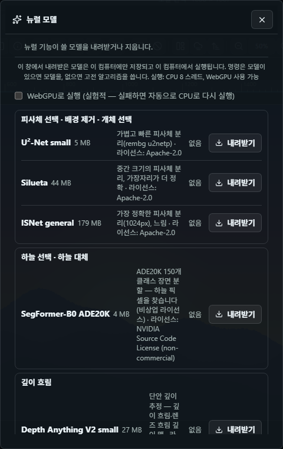
신경망 모델 창
설정은 탭이 있는 설정 창이고, 탭마다 제목이 붙은 구획으로 나뉘며, 창은 보고 있는 탭에 맞춰 높이를 바꾸므로 어느 탭도 스크롤하지 않고 빈 자리도 남기지 않습니다.
일반 — 언어(국기가 그려진 한국어·English 단추)와 작업 내역 단계 수.
시작 화면 — 시작 화면과 튜토리얼 질문을 보일지, 배경과 속도, 투명도.
테마 — Dark 20종과 Light 20종을 한 줄에 색 견본 넷으로. 키보드 단축키와 뉴럴 모델 창으로 가는 바로 가기, 최근 파일 목록을 비우는 단추, 그리고 뉴럴 모델용 WebGPU 스위치.
사용자 정의 — 직접 만든 테마의 목록과 편집.
보기 — 무엇을 보여 줄지(눈금자, 격자, 안내선, 픽셀 격자, 스마트 안내선, 분할 영역, 메모, 패스, 표시 여부, 패턴 미리보기), 스냅 설정(스냅, 안내선에, 격자에, 안내선 잠금), 눈금자 단위, 패널 너비, 저해상도 인쇄 색상과 색상 영역 경고.
도구 — 선택 기본값(모드, 페더, 앤티앨리어스, 인접, 모든 레이어에서 표본) 과 표본·채우기 설정(허용치, 스포이드 표본 크기, 정렬된 복제, 인상주의 패턴 도장).
엔진 — 알고리즘 자신이 쓰는 수치. 알맞은 값이 사진마다 다른 세 명령을 위한 것입니다.
내용 인식 채우기와 제거 도구 — 마무리 라운드(1–8, 기본 4)와 라운드당 검색. 라운드가 많을수록 채운 자리의 질감이 살아나고 시간이 듭니다. 다섯을 넘으면 채움에 띠가 생깁니다.
피사체 선택, 개체 선택, 배경 제거 — GrabCut 반복, 결과를 하나의 개체로 정리할지 여부, 그리고 그 정리에서 살아남으려면 가장 큰 조각에 견주어 얼마나 커야 하는지. 100% 면 가장 큰 조각 하나만 남습니다. 팔이나 소품이 몸과 떨어진 것으로 읽히면 값을 낮추세요.
하늘 선택과 하늘 대체 — 하늘이 더 번지는 것을 멈추는 이웃 픽셀 사이의 색 단차, 그림 맨 위 띠에서 색이 얼마나 이탈해도 되는지, 그리고 수평선 허용치. 단차가 작으면 수평선에서 더 일찍 멈추고, 이탈이 작으면 한쪽 끝에서 다른 끝으로 물드는 하늘을 놓칠 수 있습니다.
이 값들은 내장 알고리즘에 적용됩니다. 편집 ▸ 뉴럴 모델에서 해당 모델을 받아 두면 모델이 대신 돌고 이 값들은 쓰이지 않습니다.
파일을 열면 마지막에 열었던 폴더에서 시작하고, 프로그램을 다시 켜도 기억합니다. 파일 메뉴의 최근 파일 하위 메뉴가 최근에 작업한 파일 스무 개를 나열합니다. 행을 누르면 그 파일이 열리고, 옆의 ✕ 가 그 파일 하나를 목록에서 빼며, 맨 아래 행이 목록을 통째로 비웁니다.
필터 갤러리는 한 번에 한 그룹의 필터를 아이콘과 이름으로 나열합니다. 필터에 마우스를 올리면 무엇을 하는지 말해 주고, 하나를 고르면 그 문장이 오른쪽 패널의 반경· 양 슬라이더 위에 놓이며 그림에 미리보기가 걸립니다. 문장은 사진에 무슨 일이 일어나는지 를 설명합니다 — "수채 물감이 마르듯 색이 고이고 가장자리가 짙어집니다" — 그래서 이 창은 필터를 돌리는 곳일 뿐 아니라 익히는 곳이기도 합니다. 필터를 고르기 전까지 적용은 흐려져 있습니다.
편집기 어디에서나 슬라이더와 숫자는 같은 방식으로 동작합니다. 손잡이와 옆의 숫자는 마우스를 따라가지만, 그림은 손을 뗄 때 다시 그립니다. 미리보기는 이미지 전체를 필터에 통과시키는 일이고, 드래그의 픽셀마다 그것을 하면 잠시 뒤 버려질 결과를 위해 드래그가 필터 속도로 느려집니다 — 멈춘 그 값만이 그릴 가치가 있습니다. 직접 친 숫자는 Enter 를 누르거나 다른 곳으로 옮길 때 반영되므로 "120" 을 쳐도 1, 12, 120 으로 세 번 그리지 않습니다. 숫자 양옆의 단추는 한 단계씩이라 곧바로 적용됩니다.
숫자마다 감소·증가 단추가 붙습니다. 왼쪽 아래의 기본 설정으로 되돌리기가 그 창의 모든 설정을 기본값으로 돌립니다. 직접 만든 것 — 브러시, 그레이디언트, 색상 견본, 모양, 도구 사전 설정, 스타일, 작업 영역, 액션 — 과 최근 파일 목록은 그대로 두고, 언어도 지킵니다.
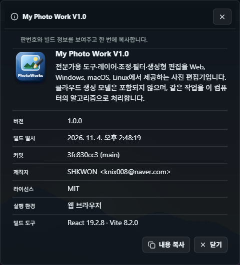
정보 창
정보 창은 버전, 빌드 시각, 커밋, 만든이, 라이선스, Tauri 와 WebView 버전, 플랫폼을 나열하고, 한 번 눌러 전부 복사합니다. 버그 보고에 환경을 설명하는 가장 빠른 길입니다.
작업이 도는 동안
어떤 일은 시간이 걸립니다. 큰 화면에 거는 내용 인식 채우기, 네 장짜리 파노라마, 프로세서에서 도는 신경망은 수 초, 때로는 수 분입니다. 그중 하나가 도는 동안 프로그램은 화면을 붙들고 클릭에 답하지 않습니다. 일하는 곳과 그리는 곳이 같은 자리이기 때문입니다.
그래서 그렇다고 말해 줍니다. 작업 이름을 단 창이 뜨고 그 아래에 막대가 붙습니다. 스스로 셀 수 있는 작업은 실제 백분율을 — 일괄 처리는 닿는 파일마다 이름을, 생성형 확대는 타일 수를 — 셀 수 없는 작업은 경과 시간을 보여 줍니다. 늘 느린 작업에는 곧바로 뜨고 나머지에는 0.5초쯤 지나 뜨므로, 눈 깜짝할 새 끝나는 수백 가지 필터가 창을 깜빡이게 하지 않습니다.
일이 도는 동안 회전 막대는 멈춰 있을 수 있습니다. 그럴 만합니다. 작업이 스레드를 쥐고 있으니 그것을 돌려주기 전까지 페이지의 어떤 것도 움직일 수 없습니다. 창이 떠 있다는 것 자체가 핵심입니다 — 일하고 있는 프로그램과 멈춰 버린 프로그램의 차이가 그것입니다.
실행 취소와 다시 실행
편집 메뉴에 실행 취소(Ctrl+Z)와 다시 실행(Ctrl+Y)이 있고, 둘 다 툴바에 단추가 있습니다. 되돌릴 것이 없으면 흐려집니다. 세션을 막 시작하면 실행 취소는 죽어 있고, 다시 실행은 무언가를 되돌린 뒤에야 살아납니다. 흐린 단추는 고장 난 것이 아니라 돌아갈 곳이 없다는 뜻입니다.
오른쪽의 작업 내역 패널이 단계마다 이름을 붙여 나열하고 어느 지점으로든 건너뜁니다.
잘못되었을 때
어떤 실패든 무슨 일을 하던 중이었는지 이름을 달고 상세를 전부 보여 주는 창이 열립니다. 오류, 스택, 문서, 도구, 환경. 글자는 선택할 수 있고 내용 복사가 전부를 클립보드에 올립니다.
Photoshop 의 방식
Photoshop 메뉴에 있는 모든 것이 여기에 같은 이름의 행으로 있습니다. 그래서 이 안내서는 이전 판과 다르게 동작하는 것만 적습니다.
선택 영역이 합쳐집니다. 모든 선택 도구에서 Shift 는 더하고 Alt 는 빼고 Shift+Alt 는 교차합니다. 옵션 막대에서 모드를 골라도 되고, 페더와 앤티앨리어스도 거기 있습니다. 빠른 선택 브러시는 끌수록 닮은 픽셀로 번지고, 개체 선택 도구는 상자를 받아 테두리에서 도드라지는 것을 남깁니다. 선택 ▸ 하늘, 초점 영역, 선택 및 마스크는 이름 그대로 합니다.
마스크는 칠하는 것입니다. 레이어 패널의 마스크 미리보기를 누르면(또는 마스크를 만들면) 브러시·그레이디언트·칠이 마스크에 씁니다 — 흰색이 드러내고 검정이 가립니다 — 레이어 미리보기를 다시 누를 때까지. 레이어 ▸ 레이어 마스크에 해제, 반전, 적용, 삭제가 있습니다. Q 로 빠른 마스크에 들어갑니다.
창은 실시간으로 미리 보여 줍니다. 모든 조정·필터 창이 슬라이더를 움직이는 대로 그림에 효과를 보여 주고, 취소가 되돌립니다.
작업 내역. 작업 내역 패널이 상태마다 그것을 만든 도구나 명령과 함께 나열하고, 하나를 누르면 그리로 돌아갑니다. 카메라가 이름 붙인 스냅샷을 만듭니다. 상태 옆의 동그라미가 그것을 작업 내역 브러시의 원본으로 삼습니다.
레이어 스타일. 레이어 ▸ 레이어 스타일(또는 레이어 더블클릭)이 열 가지 효과를 설정과 함께 엽니다. 하나를 스타일로 저장하면 스타일 패널에서 다시 걸 수 있습니다.
안내선. 눈금자에서 끌어내 만들고 도로 끌어 넣어 없앱니다. 보기 ▸ 새 안내선, 새 안내선 레이아웃, 안내선 잠금, 그리고 안내선·격자에 스냅.
문서. 여러 개를 엽니다. 그림 위의 탭이 그 사이를 오갑니다(Ctrl+Tab). 고급 개체 내용 편집이 원본을 자기 탭으로 열고, 저장이 되씁니다.
PSD. PSD 열기와 PSD 로 저장이 레이어, 그룹, 마스크, 불투명도, 혼합 모드를 지킵니다. 문자·스타일·고급 개체는 렌더링된 픽셀로 오갑니다.
픽셀 유동화는 브러시입니다. 옵션 막대에서 앞으로 뒤틀기, 소용돌이, 오목, 볼록, 재구성, 고정, 해제를 고른 뒤 Enter 로 적용, Esc 로 취소합니다.
메뉴는 접힙니다. 메뉴는 주요 명령을 보여 주고, ▸ 가 붙은 행은 마우스를 올리거나 누르면 옆에 하위 메뉴를 엽니다. Photoshop 이 그렇게 합니다.
그림을 분석하는 명령들은 진짜이고, 이 컴퓨터에서 돕니다. Photomerge 와 자동 정렬은 프레임 사이의 특징을 맞춰 각각을 제자리로 뒤틉니다(회전과 원근 포함). 자동 혼합은 레이어마다 가장자리를 흐립니다. HDR 로 병합은 노출을 융합합니다. 내용 인식 채우기, 생성형 채우기, 제거 도구는 주변 질감에서 구멍을 다시 세웁니다(PatchMatch). 하모나이즈는 붙여 넣은 레이어의 색을 다시 풀어 가장자리가 배경과 만나게 합니다 (푸아송 블렌딩). 개체 선택과 피사체 선택은 GrabCut 으로 개체를 오려 냅니다. 사진 자르고 똑바르게는 스캔한 페이지에서 인화지를 하나씩 찾아 자기 탭에 똑바로 엽니다. 이 중 처음 쓰는 것이 OpenCV 를 불러옵니다(잠깐 멈춥니다). 아무것도 내려받지 않고 아무것도 컴퓨터를 떠나지 않습니다.
소실점은 원근으로 복제합니다. 네 번 눌러 평면을 정하고, S 로 복제 도장을 고르고, 평면 위의 원본을 Alt+클릭한 뒤 칠하면 복제한 것이 평면을 따라 줄어들고 기웁니다. 적용은 여전히 클립보드를 평면 안에 붙여 넣습니다.
뉴럴 모델, 원한다면. 편집 ▸ 뉴럴 모델… 이 앱이 쓸 수 있는 신경망을 크기와 라이선스와 함께 나열합니다 — 피사체 오려 내기(U²-Net, Silueta, ISNet), 하늘 (SegFormer), 깊이(Depth Anything V2), 개체 제거(LaMa), 초해상(Swin2SR). 하나를 받으면 그때부터 피사체 선택, 배경 제거, 개체 선택, 하늘 선택, 하늘 대체, 깊이 흐림, 생성형 채우기, 제거 도구, 슈퍼 줌, 생성형 확대가 그것을 씁니다. 없으면 위에 적은 고전적 방법을 씁니다. 가중치는 공개 저장소에서 한 번 받아 이 컴퓨터에 두고 여기서 돌립니다(모든 CPU 코어. WebGPU 는 같은 창의 체크 상자입니다). 편집하는 무엇도 컴퓨터를 떠나지 않습니다.
뉴럴 필터의 피부 보정·색 입히기·복원은 여전히 알고리즘이며 그렇다고 밝힙니다.
키보드
키
동작
Ctrl/Cmd+N / O / S / Shift+S
새로 만들기, 열기, 저장, 다른 이름으로 저장
Ctrl/Cmd+P
인쇄 미리보기 열기
Ctrl/Cmd+Z / Shift+Z 또는 Y
실행 취소, 다시 실행
Ctrl/Cmd+A / D
전체 선택, 선택 해제
Ctrl/Cmd+Shift+D
방금 해제한 선택을 되살리기
Ctrl/Cmd+X / C / V
잘라내기, 복사, 붙여넣기
Ctrl/Cmd+Shift+C
병합하여 복사 — 모든 레이어를 합쳐서
Ctrl/Cmd+T
자유 변형
Delete / Backspace
선택한 픽셀 지우기
Enter
자르기·변형 적용, 또는 패스·올가미 닫기
Esc
진행 중인 것을 취소
[]
브러시 크기
X
전경색과 배경색 교환
Space
어떤 도구에서든 누른 채 화면 이동
Getting started
Installed version: run the installer and a shortcut appears on the desktop and in the Start menu.
Desktop from source: npm start
Browser: run npm run dev, then open the address shown in the terminal.
The first time you run it, a window asks whether you want to run the tutorial, and then the Start Screen appears. Behind it, a 1280×720 transparent canvas is already prepared as your document. Choose File → New to pick another size or background.
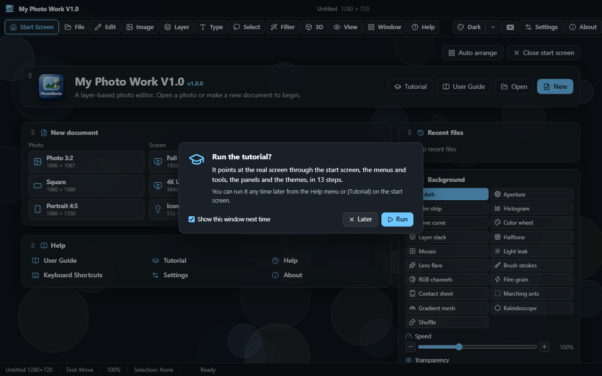
The window asking whether to run the tutorial
You can also drag an image or an .mpw project from the desktop onto the window. Dropped on an untouched document, the file opens in place of it. Dropped on a document you have already edited, it comes in as a new layer.
Start Screen
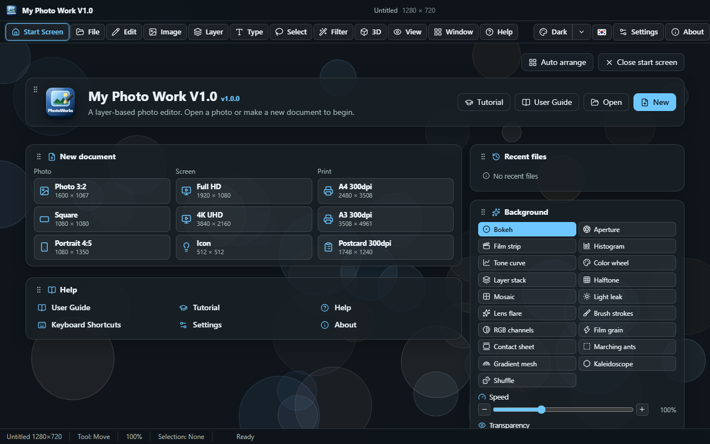
The Start Screen with its animated background
Open and close it at any time with the Start Screen button at the far left of the menu bar. The Help menu has the same item. The document you are editing stays behind the Start Screen, and the Start Screen closes by itself when you pick a command that starts work.
The cards are:
Card
What it does
Title
The program name and version, plus the Tutorial, User Guide, Open and New buttons
New document
Nine photo, screen and print sizes. Click one to make a white document of that size
Recent files
Files you opened recently. ✕ removes one at a time; Clear list removes them all
Background
18 backgrounds, plus speed, transparency, the auto-change interval and pick-at-random on start
Help
User Guide, Tutorial, Help, Keyboard Shortcuts, Settings, About
Sample pictures
Six pictures to practise on. Click one to open it as a new document
Drag a card by its ⠿ handle to move it, and drag its bottom-right corner to resize it. Double-click the corner to return to the height that fits the content. You can also focus a handle and press Alt+Arrow to move it or Alt+Shift+Arrow to resize it. Auto arrange at the top restores the original layout.
The 18 backgrounds are Bokeh, Aperture, Film strip, Histogram, Tone curve, Color wheel, Layer stack, Halftone, Mosaic, Light leak, Lens flare, Brush strokes, RGB composite, Film grain, Contact sheet, Marching ants, Gradient mesh, Kaleidoscope, drawn in the colours of the current theme. Speed runs from 0–300% (0 stops it). Transparency runs from 0–100% (at 100 only the theme's plain background remains). Turn on Shuffle or set the auto-change interval and the background switches to a different one at that interval.
Changing it in Settings
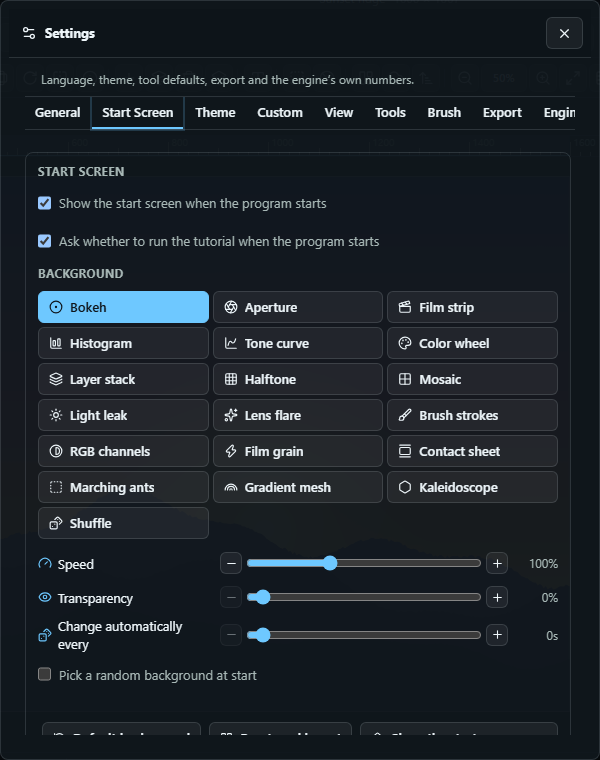
The Start Screen tab of the Settings window
Change the same values on the Settings → Start Screen tab. Changes show on the Start Screen immediately. The tab also has boxes for whether to show the Start Screen when the program starts and whether to ask about the tutorial, along with the Default background, Reset card layout and Show the Start Screen now buttons.
Tutorial
When the program starts, it asks whether to run the tutorial. Click Run and it points at the real screen and walks you through the Start Screen, menus, toolbar, tools, options bar, canvas, panels, themes and Help in turn. Click Later to close it. Turn off Show this window next time and it won't ask again; you can turn it back on under Settings → Start Screen.
The tutorial pointing at the Start Screen button
Move with the Next and Previous buttons on the guide card, or the → key (or Space) and ←, and end it with Esc. You can see it again at any time from Help → Tutorial or the Tutorial button on the Start Screen.
The window
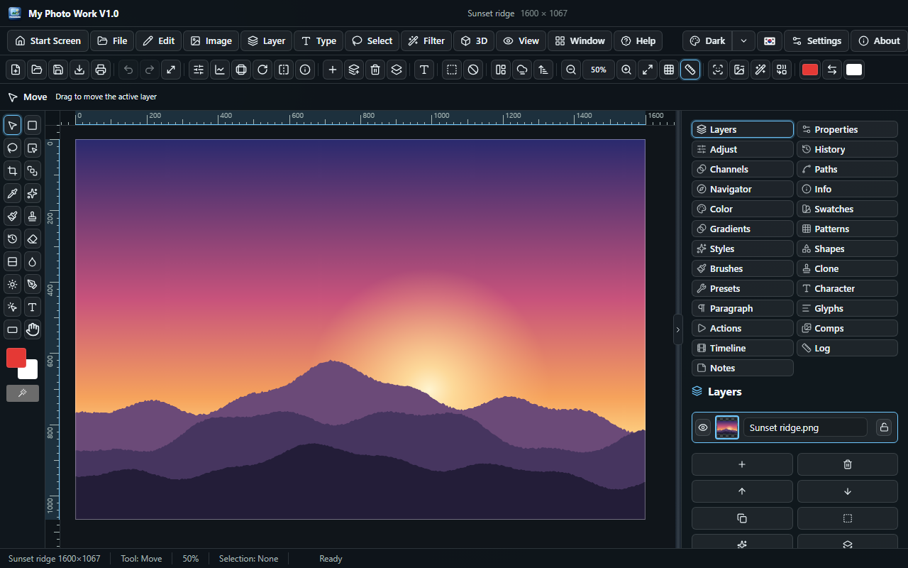
The editing screen
Four rows sit above the canvas.
Row
What is in it
Title bar
The app icon, the document name and size, and the window buttons
Type tools
Choose the direction with the Horizontal type and Vertical type buttons on the options bar or the toolbar, then click the picture to type
Menu bar
The Start Screen button at the far left, then every command grouped into menus: File, Edit, Image, Layer, Type, Select, Filter, 3D, View, Window, Help — then the theme button (click for the next theme, use the arrow to pick one), the language switch, Settings and About
Toolbar
The commands you reach for all the time, as icons — the zoom level sits between the Zoom out and Zoom in buttons — followed by Select subject / Remove background / Generative fill / Harmonize, and the foreground–swap–background colours
Options bar
The current tool and its settings, plus a one-line description of what that tool does
The toolbox runs down the left edge. Click a group that is already active again and it cycles through the tools in that group. Flyout groups work this way.
Menus and every dialog open as their own separate windows. You can drag them anywhere, a long menu may extend past the edge of the app, and they all close with the app. Clicking the button that opens a dialog again does not make a new window; it brings the one already open to the front.
A menu shows the main commands in one list, and a row ending in ▸ is a group — Blur, Artistic and Sketch under Filter, Masks under Layer, Adjustments under Image. Hover over or click such a row and the group opens as a small submenu beside it. This works like Photoshop's menus, and menus are no longer split into several columns.
The window never gets narrower than 1280px. That is the width the toolbar needs to show all its buttons on one row. The resize handle is the cluster of dots in a triangle at the bottom-right corner. The window's position and size are remembered the next time you run the program.
When you choose a tool, the mouse pointer over the picture changes to match it. The Hand tool shows a hand (a closed one while pressed), Zoom a magnifier (zoom out while Alt is held), the Type tools a text caret and the Move tool a move pointer. Other tools show a crosshair on the exact pixel they act on, with the tool's icon beside it. Tools with a size, such as the Brush, also show a circle of the current size at the current zoom. The Clone Stamp shows a plain crosshair while Alt is held, for picking the source. Outside the picture and over the rulers the pointer is the usual arrow.
The rulers show the pointer's position with a red line. The grid is 5×5: a heavy line after every five fine cells. As the zoom changes the cell size changes by a factor of five, so the spacing stays readable.
The 5×5 grid and the red pointer lines on the rulers
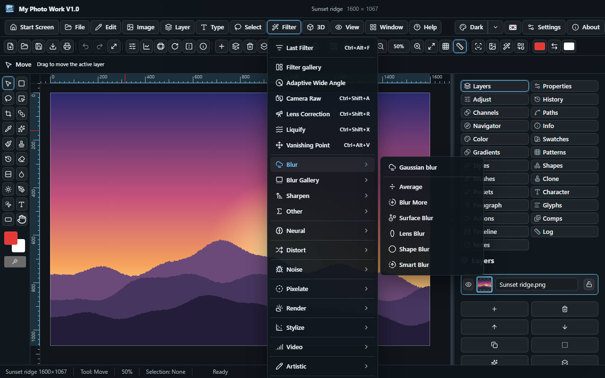
The Filter menu and its submenu
The zoom level sits between the Zoom out and Zoom in buttons on the toolbar, where it reads as the number those two buttons are changing. Click it to return to 100%.
Tools
Selection
Key
Tool
What it does
M / Shift+M
Rectangular / Elliptical marquee
Drag to select a rectangle or an ellipse
M
Single row / column marquee
Click to select a one-pixel horizontal or vertical line
L
Lasso
Draw the outline by hand
Shift+L
Polygonal lasso
Click at each corner. Enter or a double-click closes it
L
Magnetic lasso
Follow an edge and the outline snaps to it. Edge width sets how far it looks
W
Magic wand / Quick selection
Click to take an area of similar colour. Tolerance sets how similar it must be
W
Object selection
Click once to take the subject
Ctrl/Cmd+A selects all and Ctrl/Cmd+D deselects. Ctrl/Cmd+Shift+D brings back the last selection. This is what to reach for after deselecting by accident.
Refining an existing selection
All of these are in the Select menu, and they work on whatever is selected now, whether you drew it with a marquee or a lasso or took it with the magic wand.
Command
What it does
Expand
Pushes the edge outward by the number of pixels you set
Contract
Pulls it inward by the same amount, including where it meets the edge of the canvas
Border
Turns the selection into a band straddling its edge — it selects the outline of the shape, not the shape
Smooth
Rounds corners, fills pinholes and removes one-pixel bumps. The cure for a ragged magic-wand selection
Feather
Softens the edge so that whatever you do next fades out rather than stopping abruptly
Grow
Spreads to adjoining pixels that resemble the ones already selected
Similar
Takes every pixel of that colour, connected or not
Colour range
Selects by colour alone: everything close to the current foreground colour
Grow and Similar use the same Tolerance as the magic wand, which you set in Settings. Colour range has its own tolerance slider, so you can widen or narrow it without leaving the window. All of them can be undone with Ctrl/Cmd+Z.
The Select menu also holds Inverse, Find distractions and the command that removes a background in one step.
Copy, paste, fill and stroke
These are in the Edit menu.
Command
Key
What it does
Cut
Ctrl/Cmd+X
Lifts the selected pixels off the active layer
Copy
Ctrl/Cmd+C
Copies from the active layer
Copy merged
Ctrl/Cmd+Shift+C
Copies the whole picture that the selection shows, with all layers combined
Paste
Ctrl/Cmd+V
Places what you copied as a new layer
Paste into selection
—
The same, but masked by the current selection so it shows only inside it
Fill
—
Fills the selection with the foreground colour, background colour, white or black, at the opacity you choose
Stroke
—
Draws a line along the edge of the selection, inside, outside or centred
Where the browser allows it, the copy also goes onto the system clipboard so you can paste it into other programs. With nothing selected, Copy takes the whole layer. Paste places the content at the selection if there is one, and in the middle of the document if not.
Drawing and retouching
Key
Tool
What it does
B
Brush, Pencil
Paint. [ and ] change the size, and Hardness sets the edge
B
Color replacement
Repaints the colour you click with the foreground colour
E
Eraser, Background eraser, Magic eraser
Erase by stroke, by colour, or a whole area with one click
S
Clone stamp
Alt+click to set the source, then drag to clone from there
J
Spot healing, Healing brush, Patch
Blends blemishes away. With the Patch tool you drag the selection over clean pixels
J
Content-aware move
Drag the selection somewhere else and the gap it leaves is filled
O
Dodge, Burn, Sponge
Lighten, darken or change the saturation under the brush
—
Blur, Sharpen, Smudge
Soften, sharpen or smear where you drag
G
Paint bucket, Gradient
Flood fill, or drag out one of five gradients
Shapes, paths and type
Key
Tool
What it does
P
Pen
Click for a corner, drag for a curve. Enter closes it
Shift+P
Curvature pen
Just click and the curve is smoothed for you
P
Freeform pen
Draw a path by hand
A / Shift+A
Path selection, Direct selection
Move a whole path, or drag anchor points and handles
Drag to draw. Shift keeps it regular. Each becomes an editable shape layer
T / Shift+T
Horizontal type, Vertical type
Click, type, confirm
When a path is selected, the options bar lets you stroke it, fill it, turn it into a selection or delete it.
Crop, measure and view
Key
Tool
What it does
C
Crop
Drag a box, Enter to apply, Esc to cancel
Shift+C
Perspective crop
Click the four corners and press Enter to straighten
C
Slice
Drag out an area to export separately
K
Frame
Drag a frame and the layer shows only inside it
I
Eyedropper, Color sampler
Pick up a colour or leave a marker
I
Ruler
Drag to measure. Distance and angle appear in the Info panel
I
Note, Count
Leave a note or a numbered marker
H / Space
Hand
Pan the view
R
Rotate view
Drag to turn the view. Double-click to straighten it
Z
Zoom
Click to zoom in, Alt+click to zoom out
X
Swap colours
Swaps the foreground and background colours
Zoom with Ctrl/Cmd+wheel, and pan with the wheel or Space+drag.
Turn on the grid and rulers in the View menu. The rulers read in document pixels. Each number has a full-height line, with a half-height mark between two of them and short marks at every tenth.
Transform
Ctrl/Cmd+T starts Free transform on the active layer. Drag a corner to resize, drag the handle above the box to rotate, and drag the box itself to move.
Shift on a corner keeps the proportions, and on the rotation handle it snaps to 15° steps
Alt resizes from the centre
Drag a handle past the opposite edge and the layer flips
The options bar takes exact width, height and angle, and has its own flip buttons
Enter applies and Esc cancels
The Image menu rotates or flips the whole document; the Layer menu does so for one layer.
Layers
The panel on the right lists the layers from top to bottom.
The eye and the padlock control whether a layer is visible and whether it can be edited
Opacity, fill opacity and blend mode apply when the layers are composited
The Layer menu has New, Duplicate, Delete, Merge, Flatten image, Group and Ungroup
Merge visible combines only the layers that are switched on and leaves hidden ones alone. Flatten image takes everything
Rasterize layer bakes type, shape and fill layers into pixels. From then on they are painted on like any other layer
Bring to front / Bring forward / Send backward / Send to back move a layer up and down the stack
Layer styles: drop shadow, stroke, colour overlay, inner and outer glow, bevel
A layer mask hides part of a layer without erasing it
A clipping mask makes a layer visible only where the layer directly below has pixels — the way to keep a texture, a colour wash or an adjustment inside the shape beneath
Besides plain raster layers there are adjustment, fill, live type, shape and group layers. An adjustment layer changes everything painted beneath it and can be switched off at any time.
You can drag a layer off the canvas and back without it being cropped, because a move is always replayed from the layer's untouched pixels.
Smart objects and smart filters
Choose Layer ▸ Convert to smart object to make a layer a smart object. At that moment what the layer was drawing is frozen as an untouched original, and the document draws from that original every time. Shrink it to a thumbnail and enlarge it again and it comes back sharp, because it was never resampled twice.
A filter applied to a smart layer does not touch its pixels. It is added to that layer's smart filter stack, and a list appears in the Layers panel. Every entry has a switch, an amount and a bin. Switch one off and the image beneath it is exactly as it was before. When you want to make it permanent, Rasterize layer bakes the placement and the whole stack into ordinary pixels.
Channels
The Channels tab in the right panel shows the picture split into red, green and blue, and keeps your saved selections.
Select ▸ Save selection stores the current selection as a named alpha channel.
Select ▸ Load selection brings it back. Load it as it is, or combine it with what is selected now: Replace / Add / Subtract / Intersect.
The panel lists what has been saved. Click a name to load it, and the bin beside it throws it away.
Saved selections travel inside the .mpw file, so a mask you worked hard on is still there tomorrow.
More transforms
Edit ▸ Free transform handles size and rotation. The rest of the Edit menu does what it cannot.
Command
What it does
Skew
Slides the top and bottom, or the two sides, past each other
Distort
Moves each of the four corners separately in x and y
Perspective
Narrows one edge so the image leans away from the viewer
Warp
Bends it into one of eleven shapes — Arc, Bulge, Flag, Wave, Fish and more. A Bend slider and two Distortion sliders come with it
Puppet warp
Put pins in the parts that should stay still, then drag a pin to move that part. Enter applies, Esc cancels
Content-aware scale
Resizes by carving out the least interesting columns first, so the subject keeps its shape. Protect skin tones is on by default so that the seams steer clear of faces and arms. Turn it off for photos with no people. All layers are carved along the same seams, so they never drift out of register
Content-aware scale, and looking after people
An ordinary resize squashes everything equally. This one looks for the emptiest column of pixels running from top to bottom — a patch of sky, a plain wall, calm water — removes it, and repeats until the picture reaches the width you want. The subject keeps its proportions and the empty parts give way.
Left to itself, it goes wrong on photos of people. It measures how busy each part of the picture is, and skin is smooth. A cheek has less going on than the leaves behind it, so the carving eats the face and leaves the fence alone. Protect skin tones is the answer, and it is on by default. It recognises skin by colour rather than texture, covers the outline too, and makes the seams go around.
Turn it off for photos with no people — landscapes, still lifes, diagrams. There is nothing to protect and the protection can only get in the way. On anything in shades of grey, such as a black-and-white scan or a single DICOM slice, it already switches itself off in effect, because there is no colour there to mistake for skin.
The seams are chosen on the flattened picture and every layer is carved along the same seams, so several layers stay side by side without tearing.
Type
Type ▸ Enter text (or the Type tool) opens one window for the whole type layer.
The text itself, any number of lines.
Font size / Line height / Letter spacing / Indent / Paragraph spacing — a blank line starts a new paragraph, and the indent applies to the first line of each paragraph.
Alignment, Bold, Italic.
Type on a path — pick a path and the text follows it, each letter turning to face the curve.
Shape and Bend warp the finished text into the same eleven shapes as Layer Warp.
If you open the window with a type layer selected, it edits that layer instead of adding a new one.
Colour modes, bit depth and profiles
Image ▸ Mode switches the document between RGB, Grayscale, CMYK and Lab. The layers themselves stay RGBA and the mode is applied when the document is composited, so going back costs nothing and loses nothing.
Image ▸ 8 bits/channel and 16 bits/channel set the working depth. At 16 bits, adjustments are calculated at full precision and TIFF is written at 16 bits per channel. Use it when you are retouching a photo heavily or handing it on.
Image ▸ Colour profile chooses one of the four working spaces the editor knows, under the names the ICC standard gives them, and does one of two things.
Assign profile leaves the numbers alone and changes how they are read. Use it for a file that arrived untagged and whose space you know.
Convert to profile rewrites the numbers so that the colours look the same in the new space.
A JPEG that carries an ICC profile has it read, and its name is shown here and in the Image information window. A photo that looks flat can be explained rather than guessed at.
Actions, batch and layer comps
The Actions tab records what you do and plays it back.
Click Start recording, then work as usual. Every menu command and every answer in a window is written down.
Give it a name and save it. Actions are stored with your settings, so they are still there next time.
▶ plays it on the open document. No windows open during playback — it reuses the answers you gave the first time.
The layers button beside it runs the action over a whole folder and saves each file in the current export format. It needs the desktop app.
Layer comps, on the same tab, remember which layers are visible and at which opacity and blend mode. Store as many arrangements as you like and click one to go back to it. It is a way to keep three designs in one document.
Animation and video
The Timeline tab makes frame-by-frame animation.
Set the layers the way a frame should show them, then Add frame.
Each frame has its own delay in milliseconds.
▶ plays inside the document, and the square stops it.
Export as GIF writes an animated GIF. The app encodes it itself and chooses a palette for each frame, so it does not borrow colours from the first frame.
Export as video records the frames as a WebM video.
File ▸ Import video takes a video file and splits it into twelve evenly spaced frames. Each becomes a layer and a timeline frame, ready to edit or export again straight away.
Patterns and brushes
Edit ▸ Define pattern keeps the selection — or the whole layer, if nothing is selected — as a tile. Patterns you define appear in the Edit ▸ Fill window, and picking one there tiles it across the selection instead of filling with a colour. A pattern fill layer repeats it too.
The Brush section of the Settings window sets the brush shape: the Spacing between the marks it stamps, the Angle, the Roundness (below 100 it flattens), and Scatter, which spreads the marks off the line and turns a stroke into a spray. Save the current shape with a name and from then on it takes one click.
3D
3D ▸ Extrude to 3D turns the active layer into a lit solid. The flat picture becomes the front face and depth is built up behind it.
Depth is how far it goes back.
Rotate X / Rotate Y / Rotate Z turn it in space.
Perspective is how much the far side shrinks. At 0 you get a flat view.
Light X / Y move the light. Faces toward the light brighten and the sides darken.
The layer stays editable — paint on it and the solid is rebuilt with the new picture. 3D ▸ Remove 3D flattens it again, and Layer ▸ Rasterize bakes the render into pixels.
Adjustments and filters
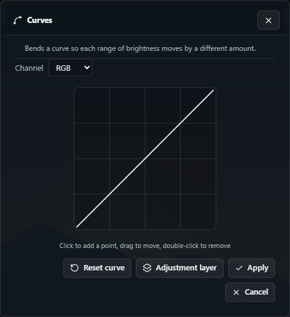
The Curves window
The Image menu has Brightness/Contrast, Hue/Saturation, Camera Raw, Curves, Levels, Auto levels, Invert, Grayscale, and the colour work below.
Command
What it is for
Auto colour
Stretches red, green and blue separately to remove a photo's colour cast. Auto levels moves all three together, so the cast stays
Equalize
Spreads the tones so that every brightness is equally common. Opens up flat, hazy images
Channel mixer
Builds each output channel from the three input channels and a constant. For a proper black-and-white conversion, or for swapping channels outright
Selective colour
Moves the cyan, magenta, yellow and black inside one colour family — reds, blues, neutrals — and leaves the rest alone
Gradient map
Reads a two-colour gradient from the image's own brightness and repaints with it. Duotone and split toning come from here
Replace colour
Changes everything close to the foreground colour into another colour. It fades out at the edge of the tolerance, so no hard border is left
Rotate 180 degrees and Trim transparent edges are in the same menu. Trim transparent edges cuts away the fully transparent border around what you can see, so run it after erasing a background.
Curves are edited per channel on a 256×256 grid. Click to add a point, drag to move it, double-click to remove it.
Levels sets the input black point, gamma and white point, and the output range. An Auto button reads the values from the layer.
Both can be applied straight to the layer or added as an adjustment layer.
The Filter menu holds the gallery. The Filter gallery window has one tab per group, with that group's filters laid out as a grid of buttons and two sliders beside them. The window is a fixed size and never scrolls, so Cancel and Apply are always where you left them. The groups the menu lists are:
Blur — Gaussian, Motion, Box, and Radial blur by spin or zoom
Sharpen — Sharpen, Unsharp mask (it has a threshold, so only edges sharpen and flat areas stay as they are), High pass
Noise — Add noise, Median (removes blotches), Dust and scratches (a median that acts only where a pixel is far from its neighbours, so real detail survives)
Other — Offset, Minimum (widens the dark areas), Maximum (widens the light ones)
Artistic — Oil paint. Neural — Skin smoothing
The gallery takes the radius and amount from the Blur and Sharpen windows you used last, so if the defaults come out too strong, set those first.
Generative work — Content-aware fill, Generative expand, Generative upscale, Harmonize, Select subject, Remove background, Find distractions — runs on this computer. No cloud model is used.
If there is a selection, all of this is limited to the selected pixels of the active layer.
Files
Open turns the document into an image or an .mpw project
Place image adds a file as a new layer
Save / Save as writes an .mpw project, in which the layers stay alive
Export flattens to PNG, JPG, WebP, AVIF, GIF or TIFF
Print shows the page in a preview and then sends it to the printer
Image information lists everything known about what is open
With the Slice select tool you can export just one slice
Unsaved changes are confirmed before New, Open, Close or quitting.
Opening photos
File ▸ Open (Ctrl/Cmd+O), the folder button on the toolbar, and dragging files onto the window all do the same thing. You can drop several files at once. On an untouched document they open one after another, and on a document you have already edited they come in as new layers.
The editor reads PNG, JPG, GIF, BMP, WebP, AVIF, TIFF, HEIC / HEIF, DICOM and its own .mpw projects.
HEIC and HEIF photos
Phones and mirrorless cameras save their best-quality photos as HEIF — .heic on an iPhone, .heif elsewhere, .hif on Fujifilm bodies. No browser can show those files, so the editor decodes them itself.
Choose a .heic file in File ▸ Open, or drag it onto the window.
The first HEIC of a session takes a little longer while the decoder loads — about 2 megabytes, and once downloaded it is reused for every later file.
The photo opens at its original resolution as an ordinary raster layer. From then on every tool, adjustment and filter behaves just as it does with a JPG.
A HEIC that holds several frames — a burst, or the still from a Live Photo — opens as its primary frame, the one the camera shows in its gallery, and the Image information window tells you how many frames the file held.
Saving back to HEIC is not offered. The encoder for this format is tied up in patents and is not in the app. Export as PNG (no loss of quality), TIFF (no loss of quality, larger) or JPG instead.
images/test04.heic in the project folder is an example you can try. It comes from Nokia's public HEIF conformance set, and you can replace it with a photo of your own whenever you like.
Exporting, and transparent backgrounds
File ▸ Export (or the download button on the toolbar) opens a small window with two controls.
Format — PNG, JPG, WebP, AVIF, GIF, TIFF.
Keep transparent background — whether the see-through parts of the picture stay see-through in the file.
When it is on, erased areas, a document made with a transparent background and a faded layer are written with their transparency. When it is off, the same picture is first placed on white paper. That is the one you need for a photo you will print, email or put on a white page.
This option applies only to formats that can actually hold transparency: PNG, WebP, AVIF, GIF, TIFF. If you choose JPG, the option is greyed out with a one-line explanation — JPEG has no alpha channel at all, so JPG is always written on white however the option is set. Either way, the document itself does not change; only the exported file does.
Both choices are remembered and also appear in the Settings window, where you also choose the format used to export a single slice.
Printing
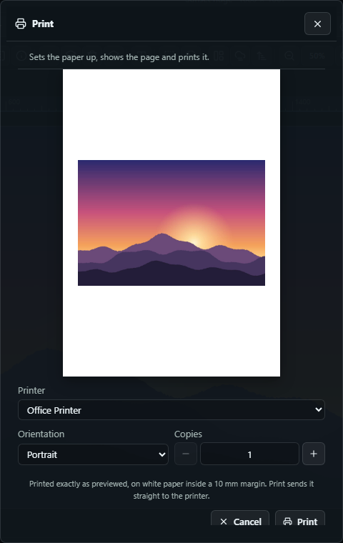
The Print window
File ▸ Print, the printer button on the toolbar, or Ctrl/Cmd+P.
One window opens, and it is both the preview and the print dialog — the page as it will come out, with the settings beside it.
Paper is drawn at the proportions of the sheet, with the same 10 mm margin as the printed page, and the picture sits on a white background inside it, flattened — transparency means nothing on paper.
Printer lists this computer's printers, with the one the system calls the default already chosen.
Orientation starts on whichever suits the picture: landscape for a wide photo, portrait for a tall one. Change it and the paper in the preview turns with it, just as a sheet of paper would.
Copies is how many to print.
Print sends the job straight to that printer. Cancel closes the window and prints nothing.
This window is a fixed size and never scrolls. The paper, three settings and two buttons are all on one screen, and turning to landscape shortens the paper rather than pushing something out of reach.
The image is scaled to fill the margins while keeping its proportions, so it is neither cropped nor stretched. Only the picture is printed — no toolbar, panels or background.
In a browser the only way to print is the browser's own print dialog, so that opens instead. It has its own preview, and you choose the printer and paper there. Choosing Save as PDF (or Microsoft Print to PDF) in it is the quickest way to get the document as a PDF.
DICOM (.dcm) medical images
CT, MR, ultrasound and X-ray studies are stored as DICOM, one file per image. Open a .dcm (or .dicom) like any other image; a file with no extension at all is recognised by its contents.
A DICOM file holds measurements, not screen colours, so before showing anything the editor does what a viewer does.
Rescale — the slope and intercept in the file turn stored values into real units. For CT, that means Hounsfield numbers.
Window — the centre and width in the file choose the slice of that range the screen will show. A file that doesn't specify a window is windowed from its own data so the whole range is visible, and from there Image ▸ Brightness/Contrast or Levels adjusts it the way a radiologist's window controls would.
MONOCHROME1 files, in which 0 means white, are inverted to match.
It reads uncompressed studies — implicit and explicit VR, little and big endian — and baseline JPEG. Studies compressed with JPEG 2000, JPEG-LS or RLE name the problem in an error rather than opening as a blank image. Colour (RGB) images such as ultrasound captures keep their colour, and a multi-frame file opens as its first frame.
Everything the file says about the patient, study and equipment is in the Image information window described below. images/test05.dcm is a sample CT slice you can try. It is one of the DICOM standard's own "CompressedSamples" test files, redistributed for conformance testing.
Saving back to DICOM is not offered. This program is a photo editor, and a slice with paint on it is no longer a record of anything. Export as PNG or TIFF.
Image information
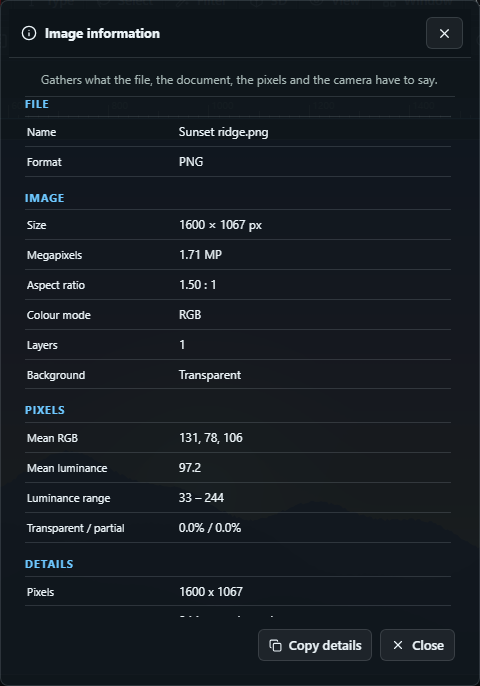
The Image information window
Image ▸ Image information, or the ⓘ button on the toolbar, opens a window that gives the facts about what is open in four blocks.
File — the name it was opened under, where it is on disk, and its format and file size.
Image — pixel size, megapixels, aspect ratio, colour mode, how many layers there are and what the background is.
Pixels — measured not from the file but from the document as flattened at this moment. Mean R, G and B, mean luminance, the range from the darkest pixel to the brightest, and how much of the picture is fully or partly see-through. Watching that range as you work is the quickest way to tell whether an adjustment has crushed the blacks or blown the highlights.
Details — what the file's own header carried. A photo taken with a camera shows its EXIF: camera and lens, the date taken, exposure, aperture, ISO and focal length, metering and white balance. A PNG shows its bit depth and colour type. DICOM shows its tags — modality, study and series, patient, equipment, slice thickness and pixel spacing, transfer syntax and the window applied. A file that carries none of these says so instead of showing invented values.
Copy details puts the whole window on the clipboard as plain text. This is what to paste into a note or a bug report.
The window reads the document at the moment it opens, so close it and open it again to see new figures after you edit.
Settings, guides and About
The right panel has twenty-five tabs — Layers, Properties, Adjustments, History, Channels, Paths, Navigator, Info, Color, Swatches, Gradients, Patterns, Styles, Shapes, Brushes, Clone Source, Tool Presets, Character, Paragraph, Glyphs, Actions, Layer Comps, Timeline, Measurement Log, Notes. They sit three to a row at the top of the panel so all are visible, and the panel scrolls as one. You can move between them with the Window menu or by clicking a tab.
At the right end of the menu bar are the theme controls, the language switch (한국어 / English), and the Settings and About windows.
Themes
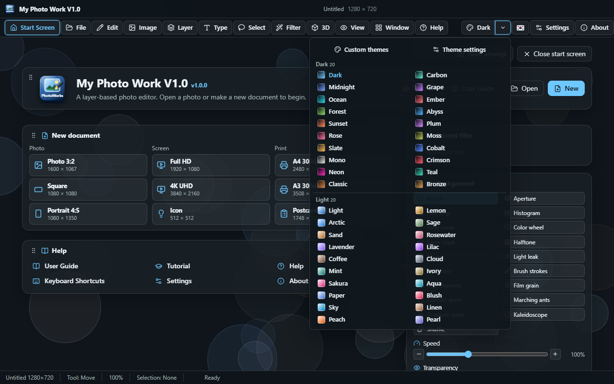
The theme drop-down
There are 20 Dark and 20 Light themes. The theme control is two buttons in one. The wide side moves to the next theme (the tooltip tells you which one is next), and the arrow beside it opens a drop-down. At the top of the drop-down are the Custom themes and Theme settings buttons, below them Dark, and below that Light, in two vertical columns. If you have made your own themes, they appear right under the buttons.
You can pick from the same list on the Settings → Theme tab.
Custom themes
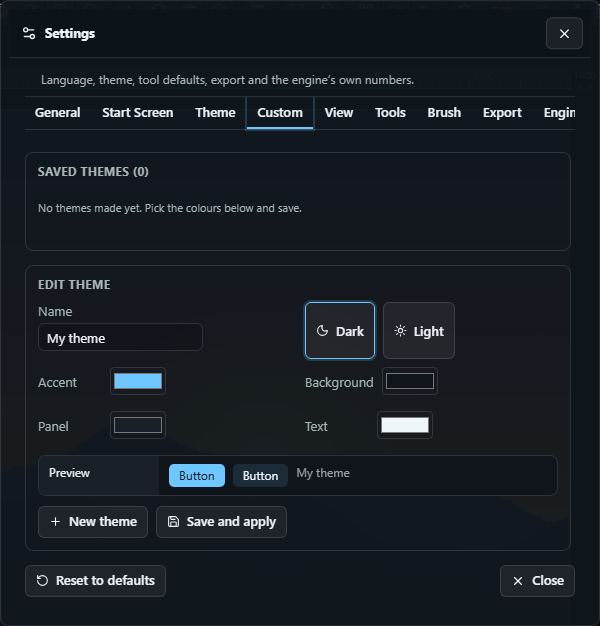
Editing a custom theme
Make one on the Settings → Custom tab. Type a name, choose Dark or Light, then set four colours — accent, background, panel and text — and the remaining colours are worked out from them. Check the preview and click Save and apply; it joins the list and takes effect at once. Click a saved theme to edit it again, and delete it with the bin button. Resetting the settings to their defaults leaves the themes you made.
Every number in the program looks the same: − and + buttons either side, and the value with its unit (px, %, °, ms and so on) in the middle.
The options bar of the Crop tool and of the selection tools has X, Y, W and H fields, for setting the exact position and size of the crop box or selection in pixels. The − and + buttons either side move one pixel, as do the Up and Down arrow keys, and Shift with an arrow moves ten. A typed value applies on Enter or when you leave the field, and a button turns off once the box has met the edge of the picture on that side. A selection made with the lasso or the wand keeps its shape as it moves and resizes. With a crop ratio chosen, typing one side sets the other. Cancel Crop clears the box being drawn, and takes back a crop or straighten just applied.
The right panel
The top of the panel shows the icon and name of what is open. Fold it away and bring it back with the arrow button to the right of that name, the button on the toolbar, Window → Collapse or expand the panel, or the Tab key. Every setting has its icon, name and control on one line.
These come built in. What you save yourself is listed separately below them.
Panel
Built in
Swatches
40 colors (vivid, deep, pastel, pale pastel, neutrals and earth)
Gradients
43
Patterns
40. Click one to make it the current pattern; double-click to fill the selection or layer with it
Styles
22
Shapes
20
Brushes
24
Tool presets
22
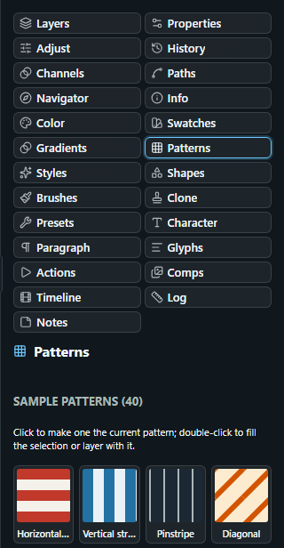
The patterns in the right panel
The right mouse button
Right-clicking the picture offers Undo, Cut, Copy and Paste, selection, layer and view commands. With a selection, the commands for it come first. A row of the Layers panel offers commands for that layer.
The right-click menu on the picture
User Guide
This guide you are reading opens in its own window. Open it with Help → User Guide (F1), the User Guide button on the Start Screen. At the top of the window you can change the font, font size and language, and those settings are kept the next time you open it. The left side is the table of contents, and it marks where you are reading. The colours follow the program's theme.
Neural models
A model, once downloaded, is not downloaded again. When the program starts it looks for models already on this computer and uses them as they are (including models fetched by the earlier Electron version), and if even one model is present it skips the download notice that appears on first run. On Windows the files are in %APPDATA%\My Photo Work V1.0\models.
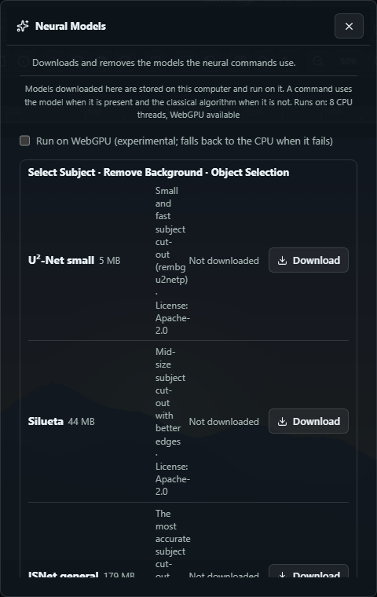
The Neural Models window
Settings is a window with tabs. Each tab is divided into titled sections, and the window changes its height to suit the tab you are looking at, so no tab scrolls and none leaves empty space.
General — the language (한국어 and English buttons, each with its flag) and the number of History steps.
Start Screen — whether to show the Start Screen and the tutorial question, and the background, its speed and transparency.
Theme — 20 Dark and 20 Light themes, four colour swatches on each row. Also shortcuts to Keyboard Shortcuts and the Neural Models window, a button that clears the recent files list, and the WebGPU switch for neural models.
Custom — the list of your own themes, and editing them.
View — what to show (rulers, grid, guides, pixel grid, smart guides, slices, notes, paths, visibility, pattern preview), the snapping settings (snap, to guides, to grid, lock guides), ruler units, panel width, and the out-of-gamut and low-resolution print colour warnings.
Tools — selection defaults (mode, feather, anti-alias, contiguous, sample all layers) and the sampling and fill settings (tolerance, eyedropper sample size, aligned clone, impressionist pattern stamp).
Export — format and transparent-background settings.
Engine — the numbers the algorithms themselves use. They are for three commands whose right values differ from photo to photo.
Content-aware fill and the Remove tool — Finishing rounds (1–8, default 4) and Searches per round. More rounds bring back the texture of the filled patch, at the cost of time. Beyond five, the fill starts to show bands.
Select subject, Object selection, Remove background — GrabCut iterations, whether to tidy the result into one object, and how large a piece must be, against the biggest, to survive that tidying. At 100% only the single biggest piece is kept. If an arm or a prop is being read as separate from the body, lower the value.
Select sky and Sky replacement — the colour step between neighbouring pixels at which the sky stops spreading, how far the colour may drift in the strip along the top of the picture, and the horizon allowance. A smaller step stops earlier at the horizon, and a smaller drift can miss a sky that shades from one side to the other.
These values apply to the built-in algorithms. Once you have downloaded the matching model in Edit ▸ Neural Models, the model runs instead and these values are not used.
When you open a file, the dialog starts in the folder you last opened from, and remembers it when you restart the program. The Open Recent submenu of the File menu lists the twenty files you worked on most recently. Click a row to open that file, the ✕ beside it removes that one file from the list, and the bottom row clears the whole list.
The Filter gallery lists one group of filters at a time, with an icon and a name. Hover over a filter and it tells you what it does. Pick one and that sentence appears above the Radius and Amount sliders in the right panel, and a preview is applied to the picture. The sentence describes what happens to the photo — "Colours pool and the edges darken, like watercolour drying" — so this window is a place to learn filters as well as to run them. Until you pick a filter, Apply stays greyed out.
Sliders and numbers everywhere in the editor work the same way. The knob and the number beside it follow the mouse, but the picture is redrawn when you let go. A preview means running the whole image through the filter, and doing that at every pixel of a drag would slow the drag to the speed of the filter, for results that are thrown away a moment later — only the value where you stop is worth drawing. A number you type is applied when you press Enter or move to something else, so typing "120" doesn't draw three times, for 1, 12 and 120. The buttons on either side of a number move one step at a time, so they apply immediately.
Every number has decrease and increase buttons. Reset to defaults, at the bottom left, returns every setting in that window to its default. It leaves alone the things you made yourself — brushes, gradients, swatches, shapes, tool presets, styles, workspaces, actions — and the recent files list, and keeps your language.
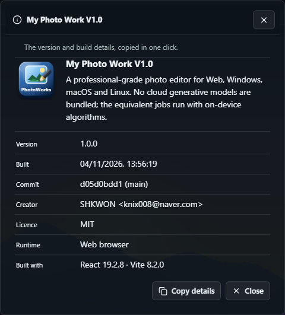
The About window
The About window lists the version, build time, commit, creator, licence, the Tauri and WebView versions, and the platform, and one click copies all of it. It is the quickest way to describe your environment in a bug report.
While a task runs
Some things take time. Content-aware fill on a large picture, a four-picture panorama, and a neural network running on the processor can take several seconds, sometimes minutes. While one of them runs, the program holds the screen and does not answer clicks, because the place where the work is done and the place where the drawing is done are the same.
So it tells you so. A window appears bearing the task's name, with a bar beneath it. A task that can count its own progress shows a real percentage — Batch shows the name of each file it is working on, and Generative upscale shows the number of tiles — and one that cannot shows the elapsed time. For tasks that are always slow it appears at once, and for the rest after about half a second, so the hundreds of filters that finish in the blink of an eye don't make the window flicker.
While the work runs, the spinning bar may stand still. That is understandable: the task holds the thread, and nothing on the page can move until it gives it back. That the window is up at all is the point — it is the difference between a program that is working and one that has hung.
Undo and redo
The Edit menu has Undo (Ctrl+Z) and Redo (Ctrl+Y), and both have buttons on the toolbar. They are greyed out when there is nothing to go back to. Right after a session starts, Undo is dead, and Redo comes alive only after you have undone something. A greyed button isn't broken; it means there is nowhere to go.
The History panel on the right lists each step by name and lets you jump to any point.
When something goes wrong
Any failure opens a window that names what you were doing and shows every detail: the error, stack, document, tool and environment. The text can be selected, and Copy details puts all of it on the clipboard.
The Photoshop way
Everything in the Photoshop menus is here as a row with the same name. So this guide describes only what behaves differently from the previous version.
Selections combine. With every selection tool, Shift adds, Alt subtracts and Shift+Alt intersects. You can also choose the mode on the options bar, where Feather and Anti-alias are too. The Quick selection brush spreads to similar pixels the more you drag, and the Object selection tool takes a box and keeps what stands out from its border. Select ▸ Sky, Focus area and Select and mask do what their names say.
Masks are painted. Click the mask preview in the Layers panel (or create a mask) and the Brush, Gradient and Fill write to the mask — white reveals and black hides — until you click the layer preview again. Layer ▸ Layer mask has Disable, Invert, Apply and Delete. Q enters Quick mask.
Windows preview live. Every adjustment and filter window shows its effect on the picture as you move the slider, and Cancel puts it back.
History. The History panel lists each state with the tool or command that made it, and clicking one returns you to it. The camera makes a named snapshot. The circle beside a state makes it the source for the History brush.
Layer styles. Layer ▸ Layer style (or double-clicking a layer) opens ten effects with their settings. Save one as a style and you can apply it again from the Styles panel.
Guides. Drag them out of the rulers to make them, and drag them back in to remove them. View ▸ New Guide, New Guide Layout, Lock Guides, and snapping to guides and grid.
Documents. You can have several open. The tabs above the picture move between them (Ctrl+Tab). Editing a smart object's contents opens the original in its own tab, and saving writes it back.
PSD. Open PSD and Save as PSD keep layers, groups, masks, opacity and blend modes. Type, styles and smart objects go across as rendered pixels.
Liquify is a brush. On the options bar choose Forward warp, Twirl, Pucker, Bloat, Reconstruct, Freeze or Thaw, then press Enter to apply or Esc to cancel.
Menus fold away. A menu shows the main commands, and a row with ▸ opens a submenu beside it when you hover over or click it. This is how Photoshop does it.
The commands that analyse the picture are real, and run on this computer. Photomerge and Auto-Align match features between frames and warp each into place (rotation and perspective included). Auto-Blend softens the edges of each layer. Merge to HDR fuses exposures. Content-aware fill, Generative fill and the Remove tool rebuild a hole from the surrounding texture (PatchMatch). Harmonize re-solves the colour of a pasted layer so its edges meet the background (Poisson blending). Object selection and Select subject cut an object out with GrabCut. Crop and Straighten Photos finds each print on a scanned page and opens it upright in its own tab. The first of these you use loads OpenCV (with a brief pause). Nothing is downloaded and nothing leaves the computer.
Vanishing point clones in perspective. Click four times to set the plane, pick the Clone stamp with S, Alt+click a source on the plane, then paint, and what you clone shrinks and tilts along the plane. Apply still pastes the clipboard into the plane.
Neural models, if you want them. Edit ▸ Neural Models… lists the neural networks the app can use, with size and licence — subject cut-out (U²-Net, Silueta, ISNet), sky (SegFormer), depth (Depth Anything V2), object removal (LaMa), super resolution (Swin2SR). Download one and from then on Select subject, Remove background, Object selection, Select sky, Sky replacement, Depth blur, Generative fill, the Remove tool, Super Zoom and Generative upscale use it. Without one, they use the classical methods described above. The weights are downloaded once from a public repository, kept on this computer and run here (on all CPU cores; WebGPU is a checkbox in the same window). Nothing you edit leaves the computer.
The Neural filters' Skin smoothing, Colorize and Restoration are still algorithms, and say so.
Keyboard
Key
Action
Ctrl/Cmd+N / O / S / Shift+S
New, Open, Save, Save as
Ctrl/Cmd+P
Open the print preview
Ctrl/Cmd+Z / Shift+Z or Y
Undo, Redo
Ctrl/Cmd+A / D
Select all, Deselect
Ctrl/Cmd+Shift+D
Bring back the selection you just cleared
Ctrl/Cmd+X / C / V
Cut, Copy, Paste
Ctrl/Cmd+Shift+C
Copy merged — with all layers combined
Ctrl/Cmd+T
Free transform
Delete / Backspace
Clear the selected pixels
Enter
Apply a crop or transform, or close a path or lasso